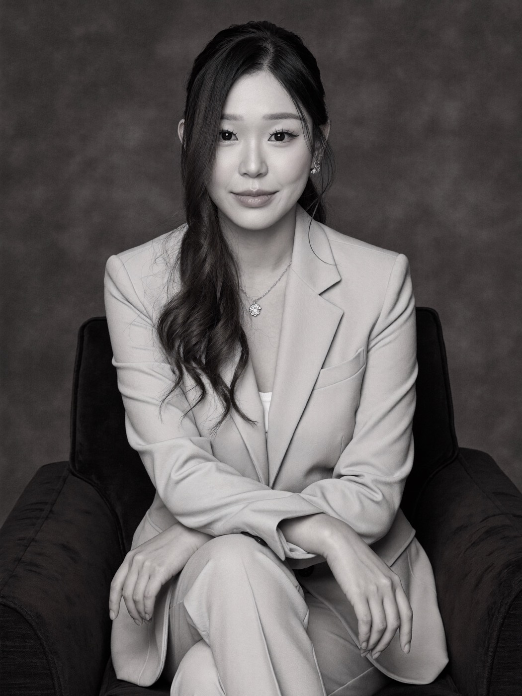
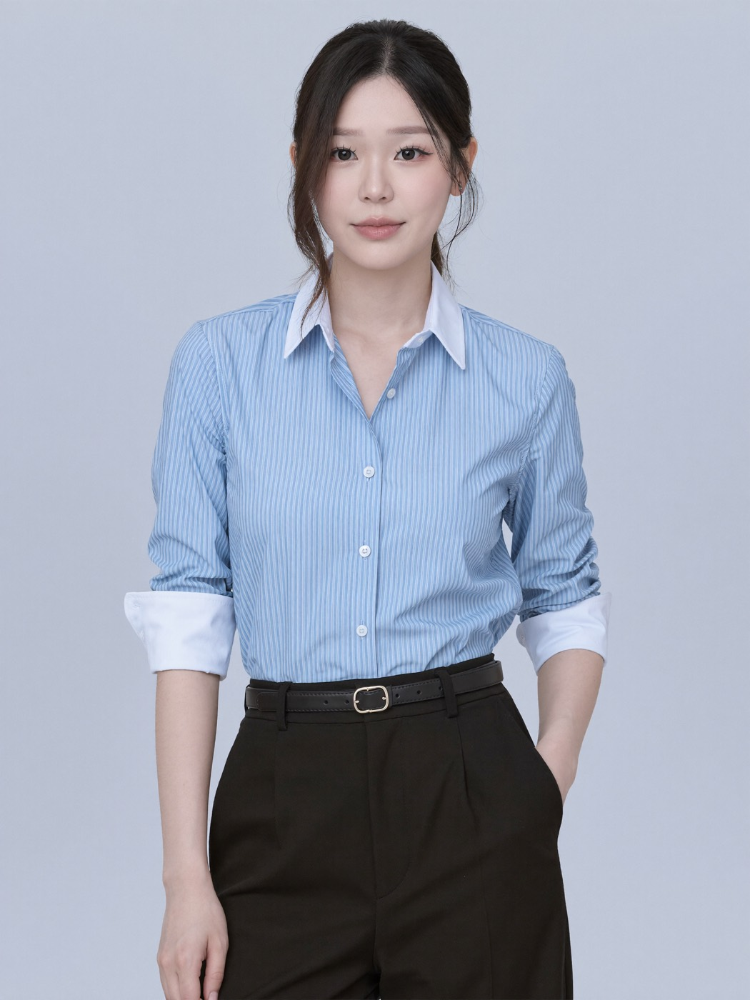
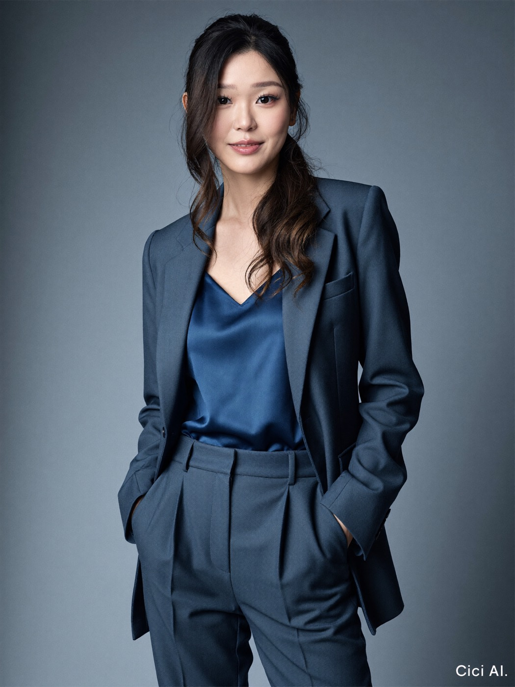
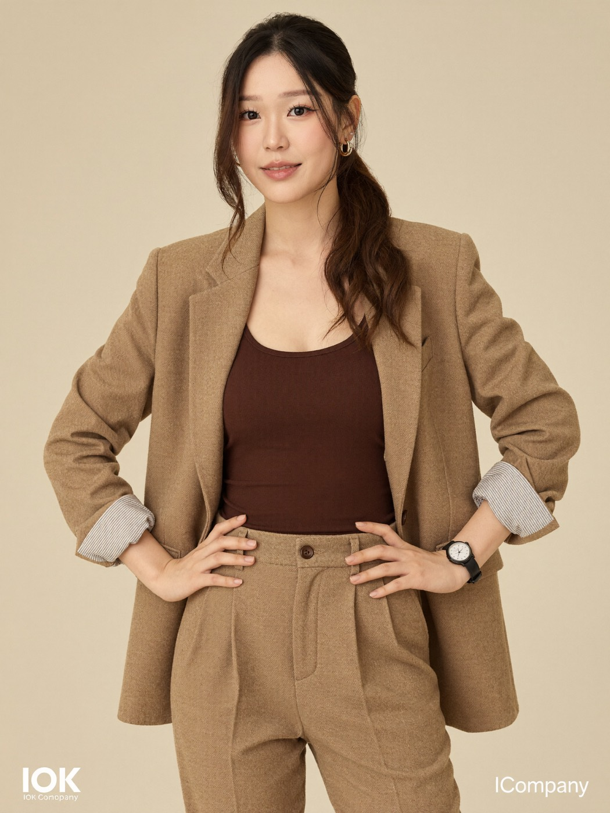
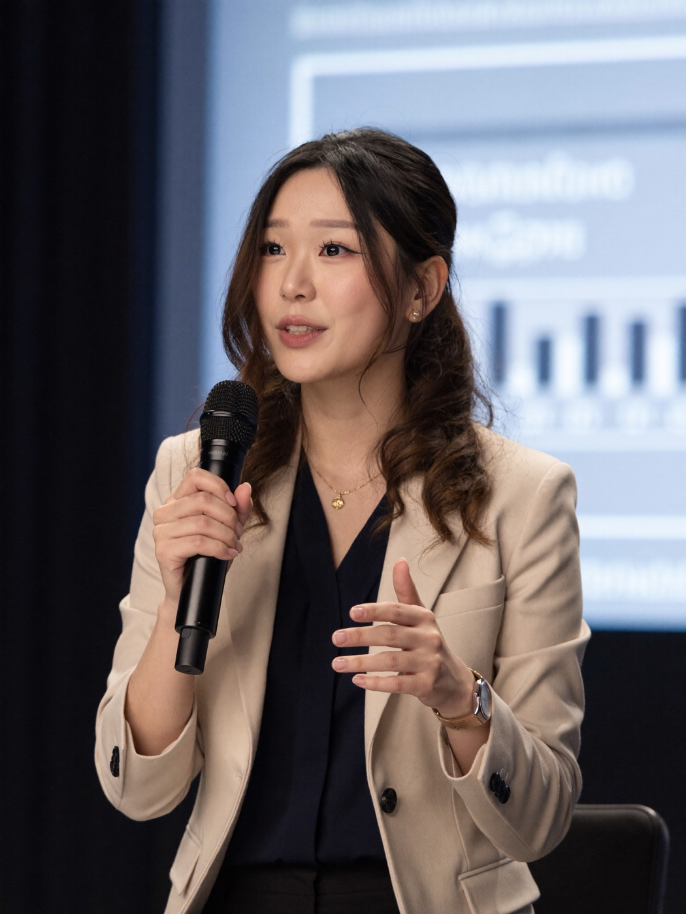
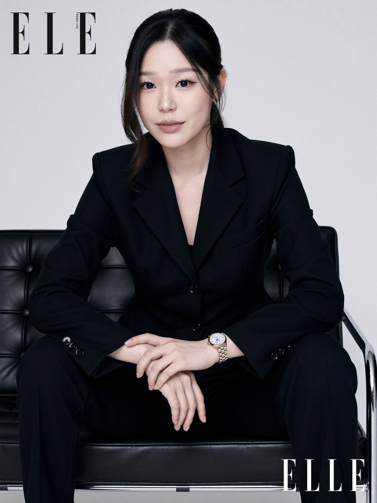
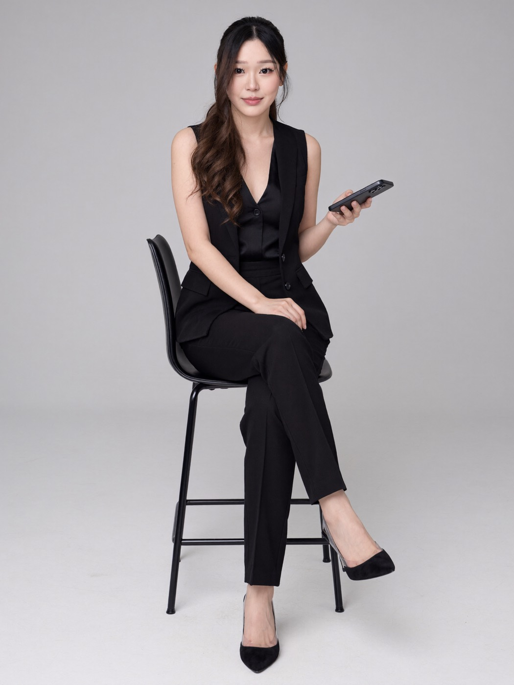
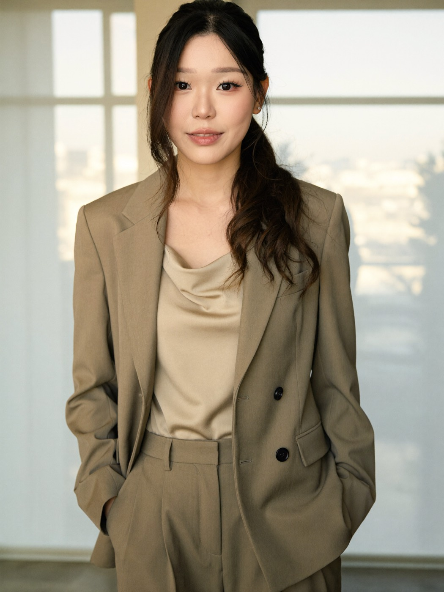
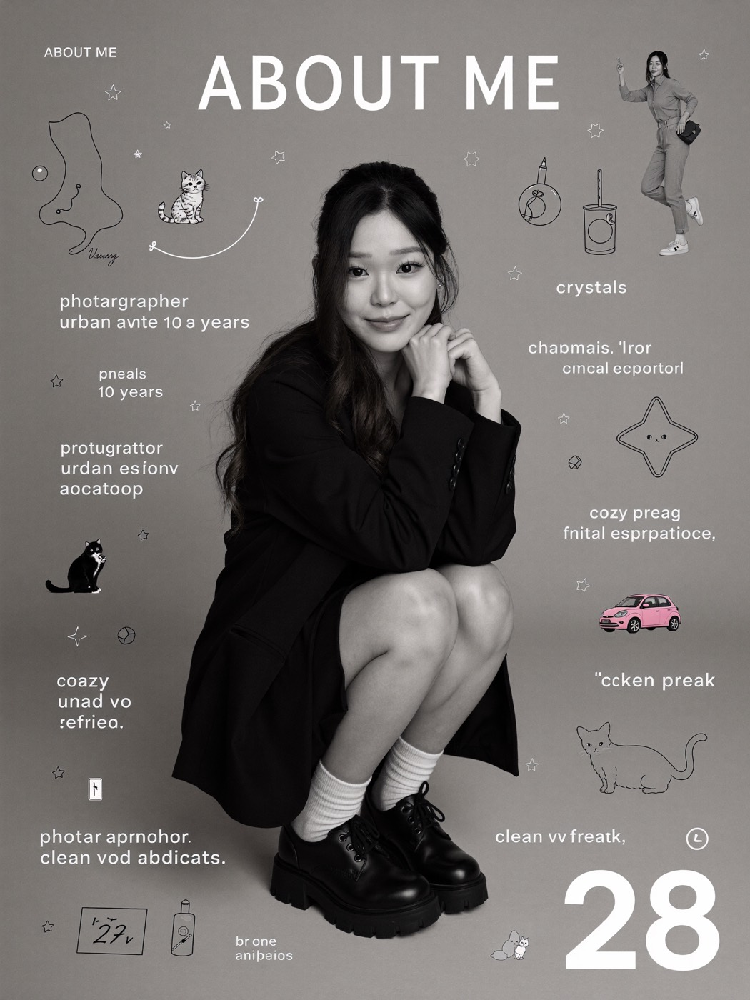
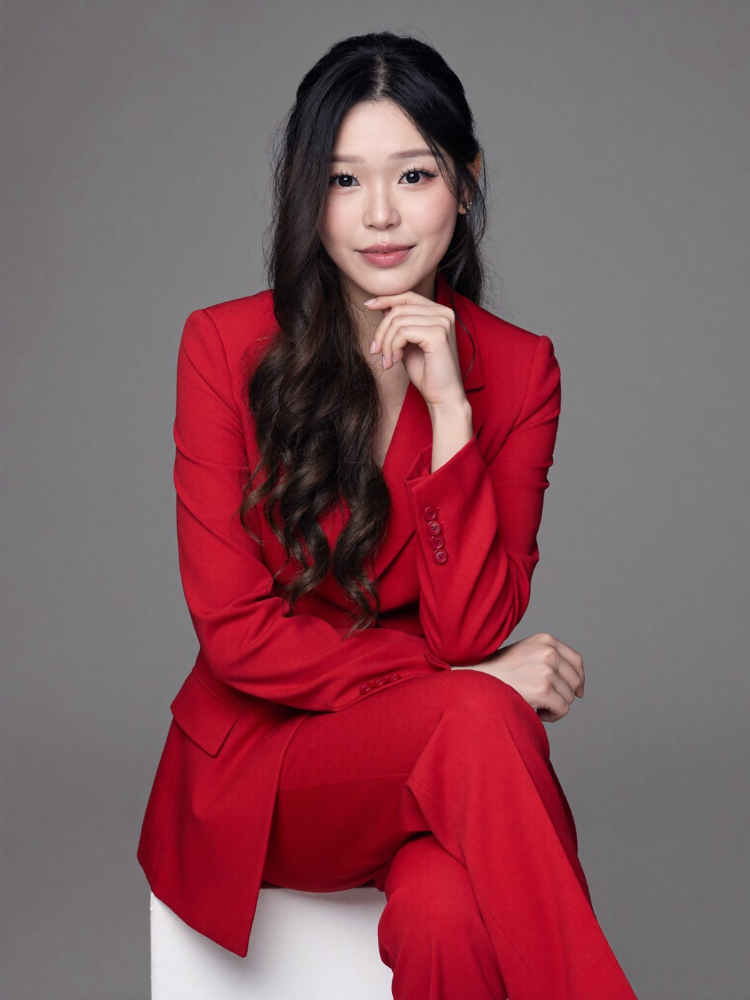

Ten LinkedIn-ready studio looks with the same face in every one: a monochrome armchair portrait, a pinstripe shirt on pale blue, a navy suit with a silk camisole, a camel suit with hands on hips, a conference stage shot with a microphone, a black suit on a leather bench, black satin with clear heels, a taupe suit in golden light, a black-and-white about-me collage, and a red suit on a white cube.
They cost nothing but the image generations, they take an evening, and you never book a studio.
Both routes run the same prompts below, because the prompts never describe the face. Tools worth knowing for route B: Krea (free to train, then US$5.25 a month), Freepik, Midjourney's character reference, and Higgsfield Soul. One catch on Krea's free plan is that it has no commercial licence, so if the photo is for a business or a client you need the paid plan. I used a trained character for these ten.
Paste one prompt at a time, with your own photos attached or your trained character selected. Swap "a young Asian woman" for a plain description of you, and change nothing else the first time you run it.
A studio medium-shot portrait features a young Asian woman with straight, shoulder-length hair, styled with a side part, who appears to be in her mid to late 20s. She sits poised on a dark, velvety armchair, crossing one arm over her body and the other resting on her lap, exuding confidence and elegance. Her tailored, matte blazer is crafted from a smooth, lightly structured fabric, and she wears a delicate necklace and ornate earrings that lend a touch of sophistication. The photo's monochromatic palette comprises rich black, soft gray, and white tones, revealing subtle textures in her clothing, hair, and skin. She faces directly towards the camera, with a gentle bokeh blur separating her from the neutral, slightly mottled studio backdrop. Illumination comes from a soft, even artificial light source, producing faint shadow gradations that accentuate her facial contours and create a flattering, editorial feel. This high-resolution digital photograph features crisp detail with minimal digital noise or grain, establishing a mood that's composed, serene, and quietly powerful.
HEX VALUES: #373737 #3e3e3e #2d2d2d #070706 #151515 #1f1f1f #cecece #c2c2c2 #b3b2b2 #a1a1a1 #929291 #818180 #616060 #504f4e #70706f
A straight-on medium shot features a young Asian woman, appearing to be in her early to mid-20s, posing against a solid pale blue background. She is dressed in a crisp, blue pinstripe button-up shirt with the sleeves stylishly rolled up to just below the elbows, and a white shirt visible underneath at the collar. Her shirt is tucked into high-waisted, formal black pants with a slim belt that has a gold circular buckle, adding a subtle accent to her outfit. Her straight, dark hair is parted down the middle and tied back, with a few loose strands framing her face. The soft, diffused lighting eliminates harsh shadows and gently highlights her clear skin and sharp features. The minimal, muted blue and black color palette creates a clean, professional look. The eye-level composition and slightly centered framing, with a shallow depth of field keeping the background smooth and even, contribute to a polished, editorial studio style. The overall atmosphere is poised, calm, and contemporary.
HEX VALUES: #bfcadb #b9c4d6 #1d1b16 #a0bedf #242321 #b0cdec #8eadce #bfa5a1 #7696b9 #cfb8b7
A straight-on medium portrait features a young Asian woman in her mid-20s, exuding confidence as she stands against a smooth, gradient gray background. She wears a sharply tailored, matte navy blue suit ensemble, an oversized single-breasted blazer with wide lapels and structured shoulders, layered over a matching blue silk camisole and pleated high-waisted trousers that present a luxurious and modern texture contrast. Her long, black hair with subtle warm brown undertones is styled in loose, flowing waves cascading over her shoulder, framing her softly luminous face, which is showcased with subtle makeup and glossed lips. Soft, diffuse studio light from above left gently sculpts her features, creating smooth skin gradations with minimal harsh shadow, resulting in a well-balanced, editorial look. The color palette is dominated by cool shades of slate and navy, accented by her natural warm skin tone. The composition is classic fashion portraiture, framed at just below the knee with a slight three-quarter turn of her body, and rendered with deep focus. The digitally sharpened, high-resolution image is free of grain or compression, and the overall mood is elegant, poised, and confident.
HEX VALUES: #5a6d7d #677a89 #4f6071 #8b9dab #06070a #435362 #788b9a #374652 #293843 #1b2935 #0f1821
A mid-length, straight-on fashion editorial shot features a young Asian woman with long, dark hair tied back in a low ponytail. She is dressed in a brown, fitted knit tank top layered beneath a woolen camel-brown oversized blazer with classic lapels and a single visible button. The white and gray striped cuffs of her inner shirt are visible, and she pairs the blazer with matching high-waisted pleated trousers, completing a coordinated and modern professional look. Her accessories include gold hoop earrings and a dark wristwatch. Her hands rest confidently on her hips, suggesting poise and confidence. The neutral background provides a clean, soft beige setting that complements the warm, earth-tone wardrobe, allowing the textures of her clothing to be highlighted by diffused, soft lighting. The dominant colors are camel brown, dark brown, and muted beige. Captured with a medium-format digital camera using a shallow depth of field and slight telephoto lens for natural skin rendering, the image is crisp and free of digital noise or compression artifacts, emphasizing an elegant, professional, and subtly empowering mood.
HEX VALUES: #d7cdb3 #dad3bb #d3c7ab #9c764f #ac875e #8c6743 #ba966d #422016 #795436 #4e2e1e #61432a #25140a #ebc6a1 #c9a279
A medium close-up shot captures an adult Asian woman presenting on stage during what appears to be a business or academic conference. She is dressed in business professional attire, consisting of a light beige blazer with a smooth, slightly matte finish worn over a dark navy blouse with a soft drape. She is holding a microphone in her right hand while engaging an unseen audience; her left hand gestures mid-sentence, suggesting an animated and confident speaking style. Her hair is shoulder-length, softly curled, and chestnut brown. She wears subtle gold jewelry, including a delicate necklace and stud earrings, and a metallic wristwatch. The background features a blurred projection screen displaying a bar chart and partially legible text, indicating an analytical or data-driven presentation. The lighting is diffuse and even, possibly from softboxes or overhead spotlights, creating a gentle highlight on her face and a calm, professional ambiance. The primary color palette is made up of cool navy blues, creamy beiges, and neutral grays, supporting the formal tone. This digital image, likely shot with a modern DSLR or mirrorless camera using a standard zoom lens and shallow depth of field, is focused on the speaker, while the foreground and background remain softly blurred, conveying an atmosphere of business sophistication and public speaking confidence.
HEX VALUES: #09090c #101117 #deeafa #c1d7f1 #a8c3e2 #30211a #c09779 #a0806a #806452 #5d483d #d0b49d #86a6cb #e2c8b1 #383539
A mid-length editorial shot captures a young Asian woman seated with her arms resting on her knees, projecting a poised and assertive demeanor. She is dressed in a sleek, matte black tailored pantsuit, the single-breasted blazer featuring sharp lapels and soft structure, paired with straight-leg trousers. Her makeup is polished, highlighting defined eyeliner and a rosy nude lip, while her dark hair is parted in the center and pulled back, with tapered wisps framing her face. She sports a minimalist, gold metal wristwatch on her left wrist, etched with a simple analog watch face, and her nails are neatly manicured. The background is a clean, studio white, allowing the model to stand out, and she sits on a black, tufted-leather and chrome bench, adding a touch of modernist mid-century design. Lighting is broad and evenly soft, creating minimal shadows and a clean, editorial gloss to the image. The color palette is intentionally limited and high-contrast: deep black, stark white, and gold during post-production. Captured in a high-resolution digital format, the overall mood is cool, sophisticated, and confident, suited for a fashion magazine cover.
HEX VALUES: #dbdde3 #060c12 #010103 #0b1318 #03070c #161c21 #252b31 #d2d5db #dfcbc4 #d4beb4
A straight-on full-body shot features a young Asian woman seated on a tall modern chair against a seamless light gray studio backdrop. She wears a tailored matte black pantsuit paired with a deep V-neck black satin sleeveless blouse, creating a textural contrast between the matte and glossy fabrics. Her long, straight hair is parted to one side, and she wears subtle makeup with a natural finish. She holds a smartphone in her right hand, openly displayed, and her legs are crossed at the ankles. Her high-heeled shoes have transparent plastic sides and pointed black suede toes, lending a contemporary and elegant vibe. The background is minimal, and the set is clean and free of clutter, ensuring all focus is directed at the subject. Lighting is soft, even, and studio-controlled, producing minimal shadows and a professional, crisp result with neutral color temperature. The color palette centers on black clothing against pale grays and the subject's fair skin tone, making the image feel sleek and modern. The image is sharp with a deep focus, shot with a standard lens, digitally captured with high clarity and no visible grain or noise. The mood is confident and professional, evoking modern corporate style and poise.
HEX VALUES: #bfbfc4 #afb1b6 #b7b9bd #c6c7cb #e3e5e9 #dbdde0 #141317 #222024 #d3d1d3 #08070a
A straight-on medium shot captures a young Asian woman in her 20s posing indoors against a softly focused, light-filled background. She is wearing a taupe oversized suit with a double-buttoned blazer and pleated trousers, paired with a pale satin-like cowl neck blouse, all of which have a smooth, slightly glossy texture. Her long black hair is worn loose, and she gazes confidently at the camera with minimalistic yet graphic makeup, featuring pronounced eyeliner. The neutral, beige, and taupe color palette dominates both her outfit and the background, making the scene feel cohesive and modern. The ambient light is diffuse and natural, creating a low-contrast, soft-shadow effect across the image and casting a gentle yellowish highlight on her face and blazer. The image is taken at eye-level and makes use of a wide aperture, producing a shallow depth of field that creates a creamy bokeh behind her. The capture quality is clean and crisp, with a likely digital origin and minimal noise, evoking a contemporary, editorial, and fashion-forward mood.
HEX VALUES: #f6f7ef #c6d1cd #58513a #b1bebd #6a6049 #a79170 #443c28 #8c7d60 #0d0a05 #282114 #876a48 #baab8e #dfccab #daaa82 #f6c8a3
A studio portrait features an Asian woman, likely in her late twenties, with long, dark hair, crouching at the center of the frame. She is dressed in a long-sleeve, loosely draped, black jacket and skirt set, along with tall, chunky-heeled black shoes paired with white ribbed socks. The high-resolution black-and-white digital photo has smooth tonal gradation and sharp detail, making the skin appear soft with subtle shadow contrast on her face and legs. The seamless, light gray studio backdrop is evenly lit without visible shadow, providing a minimalist context. Cascading around the subject is graphic overlay text and drawings in a playful style, describing her personal interests and identity markers, such as "ABOUT ME", "cat mom", and "mental health advocate", as well as a large "28" signifying her age, and phrases like "photographer of 10 years", "crystals", "urban exploration", "cozy gamer", "clean freak", and "pink vw beetle". The layout blends magazine-collage and social-media aesthetics, balancing monochromatic, neutral tones with the punchy contrast of white type and simple line art. The overall impression is introspective yet whimsical, and the mood is modern, personal, and slightly candid.
HEX VALUES: #969593 #8d8c8a #070506 #7c7b79 #848381 #6f6e6c #62615f #a2a19f #fcfbfb #52514f #1a1a1a
A straight-on medium shot features a young Asian woman seated on a white cube against a seamless, neutral gray studio background. She is smartly dressed in a vibrant red tailored suit, which is composed of a sharply cut jacket and wide-legged trousers made from a smooth fabric with a subtle sheen. Her long, dark hair is styled in voluminous, cascading waves, and she wears soft glam makeup with defined brows, contoured cheeks, and pale pink lips. Her pose is poised and confident, with her right hand delicately resting near her chin and her left hand placed on her knee, enhancing the clean lines of the composition. The lighting is soft and diffused, producing gentle, shadowless illumination across her face and clothing, and drawing out the richness of the red fabric. The color palette centers on the dominance of red set against the cool gray background and the contrasting bright white cube. The image is captured with a standard portrait lens, yielding a moderate depth of field that keeps the background subtly out of focus, while the subject remains in precise clarity. This high-resolution digital editorial image is sharp and exhibits no visible noise or artifacts. The mood evokes sophistication, composure, and modern elegance.
HEX VALUES: #7e8286 #75797d #6b6c70 #b10820 #0f0c0c #c91b2d #900316 #68030d #302929 #4b0309 #e0cdc6 #644744
Same recipe as the ten above (the prompt owns the scene, your character owns the face), a hundred new concepts across ten categories. Every one is a different backdrop, outfit, pose and light, so you can build a whole year of profile photos, banners and press shots from one character. Swap hair, gender and outfit words the same way as before, and keep the lighting and lens sentences.
The profile-photo classics: head and shoulders on clean backdrops, ten lighting setups, ten colours.
A three-quarter studio headshot, framed from the top of the head to just below the shoulders, shows a young woman in her late 20s with dark hair swept into a low bun. She wears a camel wool blazer with a peaked lapel and a matte, brushed-flannel texture, layered over a black fine-gauge merino crew neck, with small polished gold hoop earrings as the only jewelry. Her shoulders angle away toward camera right while her head turns back to the camera, held level, with a soft closed-mouth smile and a steady, direct gaze. Behind her is a seamless deep charcoal paper backdrop with a faint vignette darkening toward the edges, nothing beside her and no visible floor. The lighting is classic Rembrandt: a single medium softbox high to camera left forms a small triangle of light on the shadow side of the face, the far shoulder falls into gentle darkness, and a modest white reflector lifts the shadows slightly. Shot on an 85mm lens at eye level with a shallow depth of field, high-resolution digital capture, no grain. The palette is charcoal, camel, black, and warm gold. The mood is quietly authoritative and warm.
HEX VALUES: ["#2a2a2d", "#1c1c1f", "#c19a6b", "#a67c52", "#0b0b0c", "#d4a94a", "#e9d2bf", "#3a3a3e"]A straight-on head-and-shoulders headshot presents a young woman in her late 20s with shoulder-length hair worn down and tucked behind one ear. She wears a crisp white cotton poplin shirt with a spread collar, the top button undone, pressed flat with a slightly glossy finish, and small round pearl stud earrings. Her body is square to the camera, head dipped a few degrees, with a level gaze and a calm, open expression that stops just short of a smile. The backdrop is a seamless muted sage green paper, evenly lit so it reads as a flat soft field, nothing beside her and no floor visible. The lighting is a clamshell setup: a large beauty dish directly above the lens, angled down, paired with a white reflector just below the chest to bounce light upward, so the shadows are almost erased and only a faint soft shadow settles under the collar. Captured on a 105mm lens at eye level with a smooth shallow focus, high-resolution digital, no grain. The palette is sage green, pure white, pearl, and warm neutral tones. The mood is fresh, approachable, and precise.
HEX VALUES: ["#9caf88", "#8a9e78", "#b5c4a4", "#f7f7f5", "#e8e6e1", "#f2ede4", "#d9c7b8", "#6f8262"]A tight head-and-chest headshot captures a young woman in her early 30s with hair pulled into a sleek low ponytail. She is dressed in an espresso brown wool blazer with a notch lapel and a fine twill weave, worn over a black fine-knit V-neck, with a thin gold chain resting at the collarbone. Her torso is angled slightly toward camera left while her head turns a few degrees toward camera right, held level, with a relaxed, faint smile and a direct gaze. Behind her is a seamless powder blue paper backdrop, even in tone and lightening slightly behind her head, nothing beside her and no visible floor. The lighting is loop lighting: a medium octabox placed about 45 degrees to camera left and a little above eye level casts a compact shadow that angles down toward the shadow side, the signature loop pattern, while a white fill card at camera right keeps that side open. Shot on an 85mm lens at eye level with a shallow depth of field, high-resolution digital, no grain. The palette is powder blue, espresso brown, black, and soft gold. The mood is composed, warm, and quietly modern.
HEX VALUES: ["#b7c9d9", "#a5b9cc", "#c9d8e4", "#4a2f24", "#3a241b", "#111111", "#d6b36a", "#e6cdb9"]A straight-on head-and-shoulders portrait depicts a young woman in her late 20s with hair gathered into a loose low chignon. She wears a black matte crepe blouse with a high band collar and a covered placket, falling in a smooth, fluid drape, and small oval gold stud earrings. Her shoulders are square to the camera and her head tilts only a few degrees toward camera left, with a serene, neutral expression and a steady gaze. The backdrop is a seamless warm terracotta paper, its clay tone kept even from edge to edge, with nothing beside her and no floor in frame. The lighting is split lighting: a single strip softbox placed at 90 degrees to camera right, so one half of the face is lit and the other falls into soft shadow, with a low-powered bounce card at camera left holding just enough detail in the darker side. Captured on a 105mm lens at eye level with a shallow, creamy depth of field, high-resolution digital, no grain. The palette is terracotta, black, muted gold, and warm neutral tones. The mood is bold, editorial, and calmly assured.
HEX VALUES: ["#c2643f", "#b05a37", "#d47a55", "#141414", "#242424", "#c9a24d", "#e8c8b2", "#8f3f26"]A straight-on tight headshot, cropped from the crown to mid-chest, shows a young woman in her late 20s with a neat center part and hair worn straight past the shoulders. She wears a black wool crepe blazer with a rounded shawl collar and a smooth, dense weave over a plain white cotton crew neck tee, with a thin silver collar necklace sitting flat at the neckline. Her shoulders are level and square, head lifted slightly, with a confident, quiet half-smile and a direct gaze. Behind her is a seamless warm cream backdrop that grades gently to near white at the top, with nothing beside her and no floor visible. The lighting is butterfly, also called paramount: a beauty dish mounted directly above the camera axis and tilted down creates a small symmetrical shadow just below the head and even illumination across both sides, with a silver reflector below adding a touch of sparkle. Shot on an 85mm lens at eye level with a moderate depth of field, high-resolution digital, no grain. The palette is cream, white, black, and brushed silver. The mood is polished, bright, and classic.
HEX VALUES: ["#f3ead9", "#faf7f0", "#fdfcfa", "#1b1b1b", "#2c2c2c", "#c3c6c9", "#e8cfbb", "#ebe1cd"]A three-quarter head-and-shoulders headshot features a young woman in her early 30s with hair in a smooth low twist. She wears a dove gray flannel blazer with a soft notch lapel and a napped wool texture, over a white cotton shirt with a rounded club collar, plus slender silver drop earrings. Her shoulders angle away toward camera left while her head turns back to the lens, held level, with a composed, confident half-smile. The backdrop is a seamless gradient that runs from deep midnight navy at the edges to a lighter slate blue behind her head, nothing beside her and no floor in frame. The lighting is short lighting: the key, a medium softbox, sits on the side of the face turned away from the camera, so the broader visible side falls into gentle shadow, while a gridded strip light behind her at camera right traces a fine rim along the hair and shoulder, and a subtle fill card opens the shadows. Captured on a 105mm lens at eye level, shallow depth of field, high-resolution digital, no grain. The palette is midnight navy, slate, dove gray, and white. The mood is sleek, cool, and assured.
HEX VALUES: ["#0f1a2e", "#1b2a45", "#3b4f6d", "#7f8b96", "#a7adb3", "#f4f5f6", "#d9c2b0", "#c8cdd2"]A straight-on head-and-shoulders headshot presents a young woman in her late 20s with soft waves worn loose over the shoulders. She wears a forest green silk-blend blouse with a tie neck knotted into a loose bow, the fabric carrying a gentle sheen and fine drape, with a slim gold bar pendant on a delicate chain. Her body is square to the camera, head tilted a couple of degrees to camera right, with a warm, easy closed-mouth smile and a level gaze. The backdrop is a seamless dusty mauve paper, lit brightly and evenly so it reads as a soft pastel field, with nothing beside her and no floor visible. The lighting is high-key: a very large octabox close to the camera at a slight angle, with white V-flats on both sides bouncing light back, produces wraparound softness, minimal shadow, and only a whisper of shading under the collar. Shot on a 105mm lens at eye level with a shallow depth of field, high-resolution digital, no grain. The palette is dusty mauve, forest green, gold, and warm neutral tones. The mood is friendly, luminous, and confidently feminine.
HEX VALUES: ["#c9a9b4", "#d6bbc4", "#b493a0", "#1f4d3a", "#2d5e48", "#d4a84b", "#ecd3c2", "#173d2e"]A three-quarter headshot, framed from the top of the head to mid-chest, shows a young woman in her early 30s with a blunt bob that ends at the collar. She wears a navy cashmere V-neck sweater with a fine ribbed trim, layered over a white cotton shirt whose pointed collar sits outside the neckline, with small brushed silver stud earrings. Her torso angles toward camera right and her head turns back to the lens, held level, with a relaxed, slightly amused expression and a direct gaze. Behind her is a seamless deep ochre paper backdrop, a warm mustard tone, even across the frame, with nothing beside her and no floor visible. The lighting is broad lighting: the key, a medium softbox at camera left, illuminates the side of the face closest to the camera, while a gridded kicker behind her on the right outlines the shoulder and hair, and a white fill card lifts the darker side. Captured on an 85mm lens at eye level, shallow depth of field, high-resolution digital, no grain. The palette is ochre, navy, white, and silver. The mood is warm, grounded, and quietly confident.
HEX VALUES: ["#c99a2e", "#b8892a", "#d9ad45", "#1a2540", "#0f1a33", "#f6f5f1", "#b8bcc0", "#e4c7b1"]A straight-on head-and-shoulders portrait shows a young woman in her late 20s with hair in a low, tidy bun. She wears an oatmeal boucle jacket with a collarless round neck and hidden hook closures, the nubby wool texture catching the light, over a plain black shell, with small gold-tone button earrings. Her shoulders are square, head turned a few degrees toward camera left with the gaze returning to the lens, and her expression is calm and thoughtful. The backdrop is a seamless deep teal paper, saturated and even, with nothing beside her and no floor in frame. The lighting is hard and directional, meant to read like sunlight through a window: a single gridded small reflector at camera left, set high, throws a crisp shadow line across the collar and a defined shadow on the far side, while a low-powered white fill card at camera right keeps detail in the dark side and the boucle highlights stay crisp and specular. Shot on an 85mm lens at eye level with a shallow depth of field, high-resolution digital, no grain. The palette is deep teal, oatmeal, black, and warm gold. The mood is editorial, textured, and self-possessed.
HEX VALUES: ["#0f4c5c", "#0b3f4d", "#166273", "#d8cfbf", "#c9bfae", "#121212", "#cfa456", "#e7cdb8"]A slightly high-angle head-and-shoulders headshot, the camera a few inches above eye level, captures a young woman in her late 20s with hair held back by a slim tortoiseshell headband. She wears a burgundy fine-knit crew neck sweater with a smooth merino surface and a neat ribbed neckline, with a delicate silver chain carrying a tiny disc pendant. Her body is angled gently toward camera left, head turned to the lens and tipped up a touch toward the higher camera, with a soft, natural smile and a level gaze. Behind her is a seamless gradient backdrop that shifts from pale lilac gray at the top to a slightly cooler light gray at the bottom, with nothing beside her and no floor visible. The lighting mimics overcast daylight: a huge diffusion scrim in front of a bank of lights produces wraparound, nearly shadowless illumination, with only a faint gradient of shade under the collar and along the far shoulder. Captured on a 105mm lens with a shallow depth of field, high-resolution digital, no grain. The palette is lilac gray, burgundy, silver, and warm neutral tones. The mood is soft, honest, and gently confident.
HEX VALUES: ["#d9d3de", "#cbc6d1", "#bfbcc4", "#6b1f2e", "#7d2637", "#b9bcc2", "#e6cbb8", "#e3dee7"]Waist-up looks with the hands doing something natural, for banners, about pages and speaker bios.
A straight-on hip-up portrait shows a young woman in her late 20s with dark hair in a low bun, standing in a boardroom. She wears an ink black wool suit with a single-breasted, one-button jacket and a slim notch lapel, over a white crepe shell, with a slim gold bangle. Her hands are caught mid-action, the right fastening the single button while the left holds the jacket edge, weight on her back foot, shoulders relaxed, head turned slightly toward the lens with a soft, closed-mouth smile and a level gaze. Behind her, a floor-to-ceiling glass wall shows a softly blurred city skyline in cool grays, beside her the end of a long walnut conference table with two black leather chairs, and the floor is pale polished concrete. The lighting is diffused overcast daylight pouring through the glass from camera left, wrapping softly and leaving a gentle shadow along her right side, with no artificial fill. Shot on a 50mm lens at chest height with a moderate depth of field, high-resolution digital, no grain. The palette is black, white, walnut, cool gray, and pale concrete. The mood is decisive and quietly ambitious.
HEX VALUES: ["#0d0d0f", "#1a1a1d", "#f5f4f1", "#5b3a29", "#7a8790", "#a9b1b7", "#cfcfcd", "#e2c9b4", "#c6a45a"]A three-quarter waist-up portrait depicts a woman in her early 30s with hair in a soft low twist, seated in a dark green leather armchair. She wears a rust-colored wool crepe blazer with a slim notch lapel and a matte weave, over a stone-colored fine-knit crew neck, with small gold stud earrings. Her right hand holds a hardcover book half open against her knee, her left forearm along the armrest, head turned toward the camera with a thoughtful, closed-mouth smile and a level gaze. Behind her rise tall oak bookshelves with cloth-bound spines in muted greens and burgundies, beside her a small walnut side table with a brass reading lamp, and the floor is a dark herringbone parquet. The lighting comes from the warm tungsten reading lamp at camera right as the key, casting amber highlights on the blazer and a soft shadow toward camera left, balanced by cool daylight fill from a distant window. Captured on a 35mm lens slightly above eye level, moderate depth of field, high-resolution digital, no grain. The palette is rust, stone, oak, deep green, and brass. The mood is scholarly, warm, and self-assured.
HEX VALUES: ["#a8492c", "#b9573a", "#c8bfae", "#8b6a45", "#2f4a3c", "#5d2a2f", "#b58b3a", "#3b2a20", "#e4c8b1"]A three-quarter waist-up portrait shows a young woman in her late 20s with hair in a sleek low ponytail, standing on a rooftop terrace. She wears a slate blue linen-blend suit jacket with a relaxed notch lapel and slubbed texture, over a white cotton tee, with a brushed steel watch on a mesh band. Her hands are busy adjusting the left cuff, right fingers turning the sleeve back a fold, elbows tucked in, head lifted from the cuff just enough to meet the lens with a faint, relaxed smile. Behind her, a low concrete parapet edges the terrace and a hazy skyline dissolves into soft warm gray, beside her a slim black railing, and the floor is pale timber decking. The lighting is late-afternoon sun from behind at camera right, tracing a golden rim along her hair and shoulders, with a silver reflector at camera left throwing soft fill forward. Shot on an 85mm lens at eye level with a shallow depth of field melting the skyline, high-resolution digital, no grain. The palette is slate blue, white, warm gray, gold, and pale timber. The mood is calm, open, and forward-looking.
HEX VALUES: ["#5b6f8a", "#6c7f98", "#f4f3ef", "#b6b0a8", "#d9cfc2", "#e8b86d", "#cfb08a", "#2b2b2b", "#e9cdb5"]A straight-on waist-up portrait captures a young woman in her late 20s with hair swept over one shoulder, seated at a café table beside a large window. She wears a pale pink cotton oxford shirt with a button-down collar, sleeves rolled once, tucked into high-waisted black trousers with a slim black belt, and small gold huggie earrings. Both hands cradle a plain white ceramic cup on the table, elbows resting lightly on the tabletop, head straight to the lens with an easy, natural smile and a level gaze. Behind her, a whitewashed plaster wall holds a single unframed linen canvas in muted terracotta, beside her the matte black steel window frame with a blurred street beyond, and the table is warm honey oak, otherwise bare. The lighting is hard direct window sunlight from camera right, carving a bright edge along the shirt and a crisp shadow across the table, the bright wall acting as natural fill. Shot on a 50mm lens at eye level with a moderate depth of field, high-resolution digital, no grain. The palette is pale pink, black, honey oak, white, and terracotta. The mood is relaxed, sunny, and personable.
HEX VALUES: ["#f2cfd0", "#e8bfc1", "#151515", "#c99a5b", "#dfb679", "#f8f6f2", "#c1613f", "#e7c8b0"]A straight-on hip-up portrait presents a woman in her early 30s with hair in a low chignon, standing behind a chair in a minimalist office. She wears a cobalt blue crepe blazer, single-breasted with a sharp notch lapel, over a black silk-blend shell, with black trousers and a thin silver cuff bracelet. Both hands rest on the top rail of a black leather-and-chrome chair in front of her, fingers loosely spread, weight forward on her forearms, shoulders level, head straight to the lens with a composed, confident closed-mouth smile. Behind her stretches a raw board-formed concrete wall with faint horizontal formwork lines, beside her a single tall black floor lamp switched off, and the floor is smooth pale gray resin. The lighting is a large softbox key at 45 degrees to camera left, slightly above eye level, throwing a soft loop-style shadow and a gentle gradient on the concrete, with a white V-flat at camera right as fill. Captured on a 50mm lens at chest height with a moderate depth of field, high-resolution digital, no grain. The palette is cobalt, black, concrete gray, chrome, and pale resin. The mood is modern, direct, and architectural.
HEX VALUES: ["#1f3fb5", "#2a4fcf", "#101010", "#8d9195", "#a5a8ab", "#c9cbcd", "#d9dadb", "#e5c9b3"]A three-quarter waist-up portrait shows a young woman in her late 20s with hair in a high, smooth ponytail, one shoulder leaned against a wall. She wears a deep plum wool blazer with a peaked lapel and a brushed texture, over a white fine-knit tee, with small silver hoop earrings. Her right hand holds a slim tan leather portfolio flat against her hip, her left arm hanging relaxed, weight settled into the leaning shoulder, head turned toward the lens with a calm, curious half-smile. Behind her is a whitewashed brick wall with visible mortar lines, beside her a matte black steel window frame, and the floor is bleached wide-plank oak. The lighting is edge-lit: a gridded strip softbox at camera right as the key skims the brick, and a second strip light behind her at camera left traces a bright rim on the ponytail and shoulder, with only a low fill card. Shot on an 85mm lens at eye level with a shallow depth of field, high-resolution digital, no grain. The palette is plum, white, tan, black, and bleached oak. The mood is creative, composed, and quietly bold.
HEX VALUES: ["#4a2544", "#5c2f55", "#f6f5f2", "#c48f5a", "#1c1c1c", "#e9e6e0", "#d6cbb8", "#e5c6ae", "#b7b1a7"]A slightly low-angle hip-up portrait, camera just below chest height, depicts a woman in her early 30s with hair in a neat French twist, standing on the landing of a grand staircase. She wears a graphite gray wool crepe dress with a bateau neckline and bracelet-length sleeves, with a slim black leather belt and small pearl drop earrings. Her right hand rests lightly on a polished brass handrail beside her, her left hand holding a folded charcoal wool coat over the forearm, weight on the higher step, head turned to the lens with a serene, level gaze and the faintest smile. Behind her the pale veined marble steps rise toward a tall arched window, beside her the brass rail curves upward, and the floor is the same cool marble, softly reflective. The lighting comes from warm tungsten pendant practicals overhead, a gentle top light pooling warmly on the shoulders, with cool daylight from the window bouncing off the marble as fill from below. Captured on a 35mm lens with a moderate depth of field, high-resolution digital, no grain. The palette is graphite, marble white, brass, charcoal, and pearl. The mood is elegant, steady, and quietly grand.
HEX VALUES: ["#3a3b3f", "#2c2d31", "#ece8e1", "#d8d3ca", "#b28a3c", "#c9a458", "#2a2a2a", "#f1efe9", "#e6cab4"]A three-quarter waist-up portrait shows a young woman in her late 20s with hair worn loose, seated on a walnut chair with a caned back. She wears a pale lavender silk-blend shirt with a spread collar and a fluid drape, tucked into charcoal wide-leg trousers, with a thin gold chain bracelet. Her right hand is lifted, tucking a strand of hair behind her ear in an unposed gesture, while her left hand rests on her knee, posture upright yet relaxed, head tilted slightly toward camera left with a warm, unguarded smile and a level gaze. Behind her hang floor-length deep green velvet curtains, falling in soft vertical folds, beside her the curtain meets a pale plaster wall, and the floor is a low-pile oatmeal wool rug. The lighting is soft broad daylight from a large window at camera left, wrapping the lit side and rolling into a gentle gradient across the velvet, no artificial fill. Shot on an 85mm lens at eye level with a shallow depth of field, high-resolution digital, no grain. The palette is deep green, pale lavender, charcoal, walnut, and oatmeal. The mood is unhurried, intimate, and confident.
HEX VALUES: ["#1d3d2f", "#254a3a", "#dcd2ea", "#c9bde0", "#3b3b3d", "#6a4a34", "#cfc2a8", "#e8cdb6", "#f0ede6"]A straight-on hip-up portrait captures a woman in her early 30s with hair in a low, glossy bun, standing in a bright lobby. She wears a tailored black wool waistcoat, buttoned, over a white cotton shirt with a band collar, with straight black trousers, a thin silver watch, and small gold stud earrings. Both hands hold the top handles of a structured tan leather tote at hip level, arms relaxed, weight evenly balanced, head straight to the lens with a calm, purposeful expression and the beginning of a smile. Behind her runs a wall of pale travertine with soft veining, beside her a low black leather bench and a tall olive tree in a terracotta pot, and the floor is honed cream limestone. The lighting is skylight top light from a glass ceiling far above, softened as it bounces up from the pale floor, leaving gentle shadows below the shoulders and a soft glow on the travertine. Shot on a 35mm lens at chest height with a moderate depth of field, high-resolution digital, no grain. The palette is travertine cream, black, white, tan, and olive green. The mood is purposeful, poised, and unhurried.
HEX VALUES: ["#e3d6c3", "#d3c4ad", "#f0e9dc", "#111111", "#f7f6f2", "#b07a48", "#6f7a4f", "#c8623f", "#e7c8b0"]A three-quarter waist-up portrait shows a young woman in her late 20s with hair in a soft low bun, seated on a dark walnut chair. She wears a midnight blue velvet blazer with a notch lapel and a dense pile, over an open-collar white cotton shirt, plus a slim gold signet ring. Her right hand lifts to adjust the lapel's edge, her left hand rests on her crossed knee, back straight, head turned to the lens with a quiet, knowing closed-mouth smile. Behind her hangs a hand-painted canvas in mottled umber and olive brown, its brushwork softly clouded like an old-master portrait, beside her only the chair's curved arm, and the floor is dark timber. The lighting is chiaroscuro: a single large feathered umbrella high at camera left with no fill, so light falls across the lit side and slides into deep, gradual shadow across jacket and canvas. Captured on an 85mm lens at eye level with a shallow depth of field, high-resolution digital with a deliberate fine film grain for a painterly finish. The palette is midnight blue, umber, olive brown, white, and gold. The mood is timeless, contemplative, and distinguished.
HEX VALUES: ["#141f3d", "#1c2a52", "#5a4632", "#6b5a3a", "#3f3428", "#f4f1ea", "#c8a24b", "#e4c5ad", "#2a2218"]Power tailoring in ten fabrics and colours: velvet, linen, leather, check, waistcoats and wide-leg trousers.
A straight-on three-quarter-length studio portrait shows a young woman in her late 20s, dark hair in a low bun, wearing a forest green single-breasted suit in a dry, matte wool with a two-button closure, notch lapels and a softly structured shoulder, paired with a white cotton poplin shirt left open at the collar. A slim gold watch on a thin tan leather strap sits at her wrist. She stands turned a few degrees off axis with her weight on the back foot, one hand adjusting the cuff of the opposite sleeve, head level, her expression calm and quietly assured. Behind her a seamless warm sand paper backdrop curves down into a matching floor, with nothing else in frame. Lighting is a large softbox key placed high and camera left with a white reflector fill on the right, producing a gentle loop pattern and soft shadows that fall low and to her right. Shot at 85mm on a high-resolution digital camera at eye level with a medium depth of field, clean and free of grain. The palette is deep green, warm sand, crisp white and a touch of gold. The mood is grounded, capable and warmly confident.
HEX VALUES: ["#d9c7ae", "#c9b596", "#1f4a35", "#163828", "#0d2419", "#f4f1ea", "#c9a35a", "#8a7a66"]A three-quarter-angle, three-quarter-length portrait of a young woman in her late 20s, hair worn down and straight past the shoulders, in an oxblood double-breasted suit cut from a brushed wool flannel with wide peak lapels, six buttons with two to fasten, and straight trousers that break cleanly over black leather loafers. Under the jacket is a black silk shell. Small gold hoop earrings and a gold signet ring are her only jewelry. She stands with both hands clasped loosely behind her back, chest open, shoulders squared to the light and head turned back toward the lens with a level, composed gaze. The backdrop is a hand-painted canvas in mottled slate blue and steel gray, hung above a dark gray floor. Rembrandt lighting from a medium softbox high and camera right leaves a small triangle of light on the shadow side and sends shadows down and to camera left, with a low fill keeping the flannel readable. Captured at 105mm on a high-resolution digital camera, shallow depth of field, eye level, no grain. The palette is deep wine red, slate blue, black and gold. The mood is editorial, assured and quietly powerful.
HEX VALUES: ["#5b6b7c", "#43515f", "#2f3a45", "#5a1a22", "#431017", "#2c0a0f", "#111111", "#c8a24f"]A full-length, straight-on portrait shows a young woman in her late 20s, hair in a sleek low ponytail, wearing the trousers and waistcoat of a chocolate brown three-piece suit, jacket left off. The waistcoat is a six-button wool with narrow lapels and a satin back, worn over a white cotton shirt with the sleeves rolled to the forearm, and the trousers are high-waisted with a single pleat and a full break over brown leather brogues. A fine gold pocket watch chain loops from a waistcoat button into the pocket. She stands with her weight on the back leg, one foot slightly forward, both thumbs hooked into the waistcoat pockets, head tilted a fraction to one side, with a soft closed-mouth smile. The backdrop is a seamless terracotta paper sweep that runs unbroken into the floor. Clamshell lighting places a large softbox high in front and a silver reflector low, filling shadows so only a faint shadow pools under the shoes. Shot at 50mm from slightly below eye level on a high-resolution digital camera, deep focus, no grain. The palette is chocolate, terracotta, white and brass. The mood is relaxed, tailored and unmistakably in charge.
HEX VALUES: ["#c8683f", "#b45a34", "#d98a63", "#4a2c1c", "#35201a", "#f5f0e8", "#b8933f", "#6b4022"]A full-length portrait at a slight three-quarter angle of a young woman in her late 20s, shoulder-length hair tucked behind one ear, wearing a camel single-breasted blazer in a soft wool and cashmere blend, unbuttoned over a cream ribbed fine-gauge knit with a high crew neck, and matching wide-leg trousers falling in straight columns over pointed cream leather flats. Thin gold hoops and a simple gold band are her only accessories. She leans back against a deep wooden windowsill, palms resting on it behind her, ankles crossed, shoulders relaxed and head turned slightly toward the glass, expression calm and unhurried. Behind her a tall arched window is dressed with sheer white curtains, beside her the wall is painted a soft putty color, and the floor is pale oak boards. Lighting is diffused window light through the sheers acting as a broad backlit rim, with a white bounce card in front lifting the knit, so shadows fall softly forward toward the camera. Shot at 35mm on a high-resolution digital camera at eye level, moderate depth of field, no grain. The palette is camel, cream, putty and pale oak. The mood is calm, elevated and quietly luxurious.
HEX VALUES: ["#c19a6b", "#a9825a", "#efe6d6", "#d6cbbd", "#d4b58c", "#f7f5f1", "#d1b06a"]A straight-on three-quarter-length portrait shows a young woman in her late 20s, hair in a loose chignon, dressed in a black tuxedo-style jacket with glossy satin peak lapels, a single covered button and sharply structured shoulders, worn over a black silk high-neck shell, with black wool trousers carrying a narrow satin side stripe. Pearl drop earrings and a thin silver bracelet are her accessories. She stands square to the camera with her hands clasped loosely in front at the waist, shoulders relaxed, head lifted a fraction, holding a level, self-possessed gaze. Behind her a floor-to-ceiling curtain of deep burgundy velvet hangs in heavy vertical folds, and the floor is black polished stone that reflects a faint smear of the curtain. Butterfly lighting from a beauty dish placed high and directly in front sends short, symmetrical shadows straight downward and draws a soft sheen from the satin lapels, with a low reflector keeping the black fabric from blocking up. Captured at 85mm on a high-resolution digital camera at eye level with a shallow depth of field and no grain. The palette is jet black, burgundy, pearl white and silver. The mood is formal, glamorous and composed.
HEX VALUES: ["#0b0b0d", "#1b1b1e", "#5c1a2a", "#431320", "#7a2536", "#ecebe6", "#bfc1c4", "#17161a"]A three-quarter-length portrait at a slight three-quarter angle presents a young woman in her late 20s, dark hair slicked back into a low knot, in an ivory wool suit with a fine cocoa brown pinstripe, cut single-breasted with a one-button front, a nipped waist and straight-leg trousers with a crisp center crease. Beneath it she wears a white poplin shirt with a cocoa brown silk knit tie, and a thin tortoiseshell-pattern bangle rests at her wrist. She stands with one foot forward, both hands raised to straighten the knot of the tie, head angled toward the light, with a calm, direct gaze. The backdrop is a seamless espresso brown paper that reads almost black at the edges, with a matching dark floor. Split lighting from a strip softbox at camera left lights one half of the figure and lets the other half fall into deep shadow, so the shadows run straight to camera right, with faint fill keeping detail in the ivory cloth. Shot at 85mm on a high-resolution digital camera at eye level, moderate depth of field, no grain. The palette is ivory, espresso, cocoa and white. The mood is sharp, graphic and commanding.
HEX VALUES: ["#2c1d16", "#1e130e", "#3d2a20", "#f0e9dc", "#e3dac9", "#6b4632", "#f8f6f1", "#8c6a55"]A straight-on three-quarter-length portrait of a young woman in her late 20s, soft waves past the shoulders, wearing an oatmeal wool windowpane check suit with a fine rust overcheck, the jacket single-breasted with patch pockets and a slightly boxy cut over a cream silk blouse, the trousers straight and cropped just above tan suede loafers. A slim tan leather portfolio is held at her side in one hand. She stands square to the camera with her weight evenly planted, the other hand relaxed against her thigh, head turned a few degrees toward the light, with a soft closed-mouth smile. Behind her rises a wall of white-painted brick with visible mortar lines, beside her a single steel window frame catches a sliver of light, and underfoot is smooth poured concrete in pale gray. Lighting is overcast daylight from a large skylight above, soft and top-down, so the shadows sit directly beneath her and under the jacket hem with no hard edges. Captured at 50mm on a high-resolution digital camera at eye level, medium depth of field, no grain. The palette is oatmeal, rust, cream, white and pale gray. The mood is polished, modern and approachable.
HEX VALUES: ["#f1efea", "#e2ddd5", "#cfc4b0", "#bcae97", "#9e4f2f", "#efe4d2", "#b9b6b0", "#b4834f"]A three-quarter-length portrait at a slight three-quarter angle shows a young woman in her late 20s, hair in a half-up twist, wearing a deep plum velvet blazer with a soft crushed pile, shawl collar and single button, over a black silk shell with a modest scoop neckline, with black wool cigarette trousers and black patent pointed heels. A wide gold cuff bracelet is her only accessory. She stands with one hand resting flat on a black marble console table, the other hanging relaxed, hips angled away from the lens and shoulders turned back toward it, head level, with a calm, knowing expression. Behind her is a charcoal-to-black gradient, and at the edge of frame a tall brass floor lamp with a linen shade glows warm. Lighting mixes that tungsten practical as a warm rim along her shoulder with a soft daylight-balanced key from camera left, so shadows fall softly to camera right and the velvet pile catches light along its nap. Shot at 105mm on a high-resolution digital camera at eye level, shallow depth of field, no grain. The palette is plum, black, charcoal, brass and warm amber. The mood is rich, evening-formal and self-assured.
HEX VALUES: ["#2a2a2d", "#151517", "#0a0a0b", "#4a1f44", "#612c5a", "#351530", "#c69a45", "#f0b566"]A full-length portrait, camera slightly below eye level, captures a young woman in her late 20s, hair in a high ponytail, walking toward the lens across a rooftop terrace in a sand-colored linen suit with a slightly rumpled weave, the single-breasted jacket hooked on one finger and slung over her shoulder, a white cotton tee tucked into pleated linen trousers, a woven tan leather belt and tan leather loafers. A thin gold chain sits at the neckline. She is caught mid-stride, free arm swinging naturally, head level, with an easy closed-mouth smile. Behind her a low parapet wall in weathered cream stucco frames a hazy city skyline, beside her a potted olive tree stands in a terracotta planter, and the floor is a grid of terracotta tiles. Lighting is low golden-hour sun from behind and to camera right, rimming her hair and the linen with bright light, while a silver bounce fills the long shadows stretching toward the camera. Shot at 85mm on a high-resolution digital camera, shallow depth of field, no grain. The palette is sand, terracotta, warm cream, gold and hazy blue. The mood is sunlit, easy and quietly successful.
HEX VALUES: ["#d8c7a6", "#c7b48f", "#b9674a", "#cf7e5f", "#eadfc9", "#f3c77a", "#a9bccb", "#a06a3c"]A three-quarter-length, straight-on portrait shows a young woman in her late 20s, hair pulled back with a matte black claw clip, in a cognac leather blazer with a soft grained hide, notch lapels and a relaxed single-button fit, worn open over a crisp white poplin shirt, and tailored black wool trousers. A fine silver chain necklace is the only accessory. She leans one shoulder against the wall, body turned a few degrees from the camera, one hand holding the opposite wrist in front of her, head turned back to the lens, with a level, unbothered gaze. Behind her is a raw board-formed concrete wall showing the grain of its timber shuttering, beside her a narrow vertical seam runs the height of the wall, and the floor is dark polished concrete. Lighting is a single hard bare-bulb strobe from camera right, throwing a crisp shadow of her figure onto the wall at camera left and giving the leather a specular edge. Captured at 50mm on a high-resolution digital camera at eye level, deep focus, no grain. The palette is cognac, white, black and cool concrete gray. The mood is urban, direct and confidently modern.
HEX VALUES: ["#9a9a96", "#83837f", "#6d6d69", "#8b4a24", "#a45c2e", "#f5f4f1", "#151515", "#b3b3ae"]Real rooms that tell the story of the job: boardrooms, labs, courtrooms, workshops, lobbies.
A three-quarter-length portrait at a slight three-quarter angle inside a glass-walled meeting room shows a young woman in her late 20s, hair in a neat French twist, wearing an ink blue silk blouse with a soft bow at the neck, tucked into high-waisted black wool trousers with a slim black leather belt, with small silver stud earrings. She stands at the head of a long white laminate table one hand on the back of a black mesh chair, the other raised mid-explanation with an open palm, weight on one leg, head level, with an engaged, calm expression. Behind her a wiped-clean whiteboard fills the far wall, beside her the glass partitions carry faint reflections of the open-plan office beyond, and the floor is pale gray carpet tile. Lighting is cool, even ceiling panel light from above, so shadows fall short and straight down, with a faint reflection of her in the glass. Shot at 35mm on a high-resolution digital camera at eye level, moderate depth of field, no grain. The palette is ink blue, black, white, pale gray and glassy reflections. The mood is collaborative, sharp and in control of the room.
HEX VALUES: ["#f4f5f6", "#c9cbcd", "#1c2a4d", "#12203f", "#141416", "#a8b4bd", "#cfd3d6", "#e9eaec"]A half-body portrait at a slight three-quarter angle depicts a young woman in her late 20s, hair in a low side braid, at a white standing desk pushed against a tall office window, wearing a sage green silk blouse with a relaxed collar and rolled sleeves, tucked into high-waisted cream wool trousers, with a thin gold pendant necklace. One hand rests on the edge of an open laptop, the other holds a stoneware mug at her hip, weight shifted onto one leg, head turned toward the window, with a calm, thoughtful expression. Beside the laptop sit a small fern in a white ceramic pot and a stack of paper notebooks, behind her the window looks onto pale sky and a blurred neighboring building, and the floor is warm oak. Lighting is hard direct morning sun through horizontal blinds, laying crisp bands of light and shadow across the desk and her sleeve, with ambient light filling the shadow side. Shot at 50mm on a high-resolution digital camera at eye level, shallow depth of field, no grain. The palette is sage, cream, white, warm oak and sunlit gold. The mood is focused, fresh and productive.
HEX VALUES: ["#8fa38e", "#6f8570", "#f0e8d8", "#c99a67", "#f2d49a", "#f8f7f3", "#cfdde8", "#5e5449"]A three-quarter-length portrait from a slightly low angle shows a young woman in her late 20s, hair in a sleek shoulder-grazing bob, seated in a high-backed black leather executive chair turned toward the camera, wearing a charcoal wool crepe sheath dress with a bateau neckline, three-quarter sleeves and a slim black leather belt, with small onyx stud earrings. Her elbows rest on the armrests, fingers loosely interlaced in her lap, back straight, head level, expression composed and quietly satisfied. Behind her, floor-to-ceiling windows wrap the corner of the room and show a dusk city in deep blue with scattered warm window lights and an orange streak at the horizon, beside her a dark walnut desk holds a closed leather folder and a brass desk lamp with an ivory shade, and the floor is dark gray carpet. Cool blue window light behind her rims her shoulders while the warm tungsten desk lamp keys from camera left, so shadows fall softly to camera right. Shot at 35mm on a high-resolution digital camera, moderate depth of field, skyline gently softened, no grain. The palette is charcoal, walnut, dusk blue, amber and black. The mood is senior, reflective and triumphant.
HEX VALUES: ["#3a3a3e", "#26262a", "#4a2f21", "#1c2f4f", "#0f1b33", "#e0a457", "#0e0e10", "#f3d59c"]A half-body portrait across a long oak reading table, straight-on, shows a young woman in her late 20s, hair pinned up in a loose twist, wearing an ochre fine-gauge merino cardigan buttoned over a white cotton collared shirt, with a deep olive pleated midi skirt and a thin brown leather belt. A small gold locket is her one piece of jewelry. She sits with one hand resting on the pages of an open hardback and the other flat on the table beside a short stack of cloth-bound books, shoulders relaxed, head level, with a calm, attentive gaze. Behind her, tall oak shelves rise to a coffered ceiling, beside her a row of green-glass banker's lamps runs down the table, and the floor is honey-toned herringbone parquet. Lighting is overcast daylight from tall arched windows at camera right, joined by warm pools of tungsten from the lamps, so shadows fall gently to camera left. Shot at 50mm on a high-resolution digital camera at eye level, moderate depth of field, shelves softening into the distance, no grain. The palette is ochre, olive, honey oak, green glass and cream. The mood is scholarly, calm and thoughtful.
HEX VALUES: ["#c8922e", "#a9781f", "#4f5a2f", "#3b4523", "#b98a52", "#8f6535", "#2e6b4a", "#f1e9d6"]A three-quarter-length portrait at a slight three-quarter angle shows a young woman in her late 20s, soft waves clipped half back, wearing a boxy cobalt blue single-breasted blazer over a white cotton tee, with ecru straight-leg trousers, white leather loafers and a slim silver bangle. She perches on the padded arm of a mustard yellow velvet sofa one foot flat on the floor, the other heel hooked on the sofa base, hands stacked on her knee, shoulders toward the camera, head level, with a relaxed, open expression. Behind her exposed ductwork and black steel beams cross a high ceiling, beside her a tall fiddle-leaf fig in a black planter flanks a low walnut coffee table holding a ceramic bowl, and the floor is polished concrete in warm gray. Lighting is broad overcast daylight from steel-framed windows at camera left, joined by warm filament pendant bulbs overhead, so shadows fall softly to camera right with a warm glow on her hair. Shot at 35mm on a high-resolution digital camera at eye level, moderate depth of field, no grain. The palette is cobalt, mustard, ecru, white, concrete gray and walnut. The mood is creative, energetic and approachable.
HEX VALUES: ["#1f48b8", "#163a99", "#d6a72e", "#ede4cf", "#f7f6f2", "#b4b0a8", "#5a3d2b", "#1f1f1f"]A full-length, straight-on portrait shows a young woman in her late 20s, hair in a smooth high bun, at the base of a sweeping marble staircase in a hotel lobby, wearing a knee-length emerald green wool crepe shift dress with a matching cropped jacket fastened by covered buttons, and black suede pointed pumps. A structured black leather tote hangs from one shoulder, with small gold stud earrings. One hand rests on the brass handrail, the other holds the tote handles, one foot on the first step, head level, with a soft closed-mouth smile. Behind her the staircase curves up past a wall of gray-veined cream marble, beside her white orchids sit on a round pedestal table, and the floor is a checkerboard of cream and black marble. Warm tungsten from a crystal chandelier overhead pools down the stairs while cooler daylight spills from the lobby entrance at camera left, so shadows fall softly to camera right with a warm-to-cool gradient on the marble. Shot at 35mm on a high-resolution digital camera at eye level, moderate depth of field, no grain. The palette is emerald, cream marble, black, brass and white. The mood is polished, worldly and purposeful.
HEX VALUES: ["#0f6b46", "#0a5236", "#ece4d6", "#b9b3aa", "#101010", "#c19a4a", "#f7f5f0", "#f2d8a6"]A three-quarter-length portrait from a slightly low angle shows a young woman in her late 20s, shoulder-length hair with a deep side part, wearing a marigold yellow tailored blazer, single-breasted with peak lapels, over a black silk shell and black tapered trousers and black ankle boots. A tiny black lavalier microphone clips to her lapel and she holds a small black clicker at her side, other arm relaxed, weight forward on the front foot at the stage edge, head level, with a bright closed-mouth smile. Behind her a vast LED wall glows in out-of-focus deep blue gradients with no legible text, beside her stands a black lectern, below her the first rows of dark seats blur into shadow, and the stage floor is matte black. Lighting is a hard warm spotlight from high front camera right, casting a defined shadow down and to camera left, with a cool blue rim from the LED wall outlining her shoulders and hair. Shot at 85mm on a high-resolution digital camera, shallow depth of field, no grain. The palette is marigold, black, deep electric blue and warm spotlight white. The mood is authoritative, energized and ready to speak.
HEX VALUES: ["#f2b530", "#d9981f", "#0c0c0e", "#10256f", "#1a3aa8", "#2f5be0", "#fff1d6", "#1c1c22"]A three-quarter-length portrait at a slight three-quarter angle shows a young woman in her late 20s, hair in a tight braided bun, wearing a dark teal cotton twill work shirt with sleeves rolled to the elbow, tucked into straight black work trousers with black safety boots, under a fluorescent orange high-visibility vest with reflective silver bands. She holds a white hard hat under one arm, the other hand resting on a yellow-painted steel guard rail, weight on one hip, head level, with a calm, decisive expression. Behind her a robotic assembly arm and a row of gray CNC machines recede into soft focus, beside her a pallet of shrink-wrapped boxes waits by the rail, and the floor is sealed gray concrete marked with yellow safety lines. Lighting is cool high-bay LED from far above, diffused by the ceiling height, so shadows fall short and straight down beneath her, with a cool sheen on the machinery. Shot at 35mm on a high-resolution digital camera at eye level, moderate depth of field, no grain. The palette is dark teal, safety orange, black, machine gray and yellow. The mood is hands-on, competent and in command.
HEX VALUES: ["#1f4f55", "#163d42", "#f26a1b", "#ff7f2a", "#141414", "#8e9194", "#6a6d70", "#e8c623", "#b3b5b6"]A three-quarter-length portrait at a slight three-quarter angle shows a young woman in her late 20s, hair pulled back into a short ponytail, wearing a white knee-length lab coat with two patch pockets over a soft lilac crew-neck blouse, straight black trousers and white leather sneakers. A black stethoscope drapes around her neck and a blank white ID badge hangs from a plain blue lanyard. One hand rests in the coat pocket, the other holds a tablet against her side, weight even, head level, with a calm, reassuring closed-mouth smile. Behind her a long corridor with pale blue walls and a white handrail recedes toward a bright window at the far end, beside her a stainless steel medication cart is parked, and the floor is pale gray vinyl. Lighting is cool fluorescent ceiling strips repeating down the corridor, plus softer daylight from the distant window as a subtle backlight, so shadows fall short and slightly forward. Shot at 50mm on a high-resolution digital camera at eye level, moderate depth of field, corridor compressing into softness, no grain. The palette is white, lilac, pale blue, steel and gray. The mood is calm, trusted and professional.
HEX VALUES: ["#f6f7f8", "#b9a6d3", "#a08cc4", "#cfdde8", "#b7cbd9", "#9fa6ad", "#d5d7d9", "#1c1c1f"]A three-quarter-length, straight-on portrait shows a young woman in her late 20s, hair in a tight low chignon, standing behind a heavy oak table in a courtroom-style room, wearing a black wool jacket with peak lapels and a single button, a matching knee-length pencil skirt, a white silk blouse, a small gold bar pin on the lapel and black leather pumps. Both hands rest flat on the table edge as she leans slightly forward, shoulders squared, head level, with a steady, serious gaze. On the table lie a black leather document case and a stack of manila folders. Behind her rise dark walnut panels, a polished brass rail runs along the bench, beside her a brass-studded green leather chair is pushed under the table, and the floor is dark green carpet. Lighting is a large soft key from high camera left with warm tungsten from brass sconces as fill, so shadows fall low to camera right and the paneling glows amber. Shot at 85mm on a high-resolution digital camera at eye level, moderate depth of field, no grain. The palette is walnut, black, white, brass and dark green. The mood is authoritative, prepared and unshakable.
HEX VALUES: ["#4b2e1e", "#3a2216", "#5e3b27", "#0d0d0f", "#f6f4ee", "#c49b4e", "#24402f", "#1b3025"]Warm personal-brand shots for entrepreneurs and creators: desks, sofas, rooftops, podcast rooms, café windows.
A three-quarter angle half-body shot captures a young woman in her late 20s seated at a warm walnut desk, her dark hair tied in a loose low ponytail. She wears a camel merino wool crewneck sweater with a fine, even knit and a relaxed fit, sleeves pushed to mid-forearm, over straight-cut ivory cotton trousers, with a slim gold bangle and small pearl stud earrings. One forearm rests on an open linen-covered notebook while that hand holds a matte black pen mid-line, the other hand loosely cupping the edge of the desk; her head tilts a few degrees toward the lens with a soft closed-mouth smile. Behind her is a warm white plaster wall; beside her a potted fern in a terracotta pot sits at the desk corner; the walnut surface holds a ceramic cup of pencils. Lighting is soft loop light from a large window camera left, the shadow falling gently to the right beneath the chin, with the pale wall bouncing subtle fill. Captured at a 50mm feel, f/2.8, eye level, high-resolution digital, no grain. The palette is camel, ivory, walnut brown, terracotta and fern green. The mood is focused, warm, and quietly confident.
HEX VALUES: ["#b98c5a", "#f1ebe0", "#5a3a24", "#f4efe6", "#c46a3f", "#5c7a4a", "#1d1a17", "#c9a55c"]A slightly high-angle three-quarter body shot shows a young woman in her early 30s sitting cross-legged on a charcoal boucle sofa, her hair worn down in soft shoulder-length waves. She wears an oatmeal cable-knit cotton sweater with a chunky rounded collar and dropped shoulders, tucked loosely into black wide-leg wool trousers, with thin gold hoop earrings and a brown leather strap watch. A slim silver laptop rests open on her lap; one hand rests on its trackpad while the other arm drapes along the sofa's rolled arm, shoulders relaxed and head turned squarely to the lens with a level gaze and a slight amused smile. Behind her is a sage green painted wall with a single framed abstract print in muted rust; beside the sofa a low oak side table holds a small brass tray; beneath it lies a cream wool rug. Lighting is clamshell style: a large softbox key raised camera right, with a white bounce fill from below softening shadows to a faint edge under the collar. Captured at a 35mm feel, f/2.8, high-resolution digital, no grain. The palette is oatmeal, charcoal, sage, black and warm oak. The mood is relaxed, approachable, and self-assured.
HEX VALUES: ["#d9cfbf", "#3b3b3d", "#9aa88f", "#141414", "#b78a5a", "#a8563a", "#ece5d8", "#c8a24e"]A straight-on three-quarter body shot frames a young woman in her mid-20s standing at a large wall-mounted whiteboard, her hair pulled into a high ponytail. She wears a rust-colored boxy cotton-twill blazer with a single button and patch pockets over a plain white crewneck tee, paired with black straight-leg denim and white leather sneakers, plus a small silver signet ring. Her right hand holds a black dry-erase marker raised at shoulder height, paused mid-stroke, while her left hand rests on her hip; her weight sits on her back foot and her head turns toward the camera with a thoughtful, level gaze and the beginning of a smile. Behind her the whiteboard carries loose abstract flowchart boxes and arrows in blue and green marker, no legible words; beside her a pale gray office wall; the floor is polished concrete. Lighting is broad window light from camera left as the key, the white board bouncing soft fill back so shadows fall lightly to the right. Captured at a 35mm feel, f/4, eye level, high-resolution digital, no grain. The palette is rust, white, black, marker blue and pale gray. The mood is energetic, sharp, and mid-idea.
HEX VALUES: ["#b5512a", "#f7f7f5", "#161616", "#2f5ea8", "#3f8f5f", "#d8d9d6", "#c9a97c", "#a9a8a3"]A three-quarter angle shot cropped at mid-thigh captures a young woman in her late 20s standing at a black steel railing on a rooftop terrace, her dark hair swept back into a claw clip. She wears a light blue cotton oxford shirt with a button-down collar and sleeves rolled twice, tucked into high-waisted stone-colored wide trousers with a tan leather belt, and a thin gold chain necklace. Both hands wrap around a white ceramic mug of coffee held at waist height, one hip resting against the railing, her shoulders open to the lens and her head turned slightly with a calm, level gaze. Behind her a soft-focus city skyline sits in warm haze; beside her terracotta planters of rosemary and olive; beneath her feet weathered wooden decking. Lighting is backlit golden hour sun from behind camera right, creating a bright rim on her hair and shoulders, with a large white reflector in front lifting the shadow side so the remaining shadows fall softly toward the camera. Captured at an 85mm feel, f/2, eye level, high-resolution digital, no grain. The palette is sky blue, stone, tan, terracotta and honey gold. The mood is optimistic, unhurried, and forward-looking.
HEX VALUES: ["#a9c4dc", "#bcd3ea", "#cfc4b0", "#a8764f", "#b9603a", "#e0a24a", "#222222", "#e7d3b5"]A straight-on half-body shot shows a young woman in her early 30s standing in a small home studio, her hair in a low braid over one shoulder. She wears a plum satin-finish button-up blouse with a spread collar, tucked into high-rise charcoal ponte trousers, with small gold huggie earrings and a thin gold ring. One hand rests on the pan handle of a tripod-mounted mirrorless camera, the other hand tucked lightly against her waist; her posture is upright, weight even, head level, with a warm closed-mouth smile. Behind her a warm gray paper backdrop roll unfurls from a stand, its lower edge curling onto pale wood flooring; beside her a ring light on a stand glows softly camera right and a folded white reflector leans against the wall; on the floor a coiled black cable. Lighting is the ring light positioned camera right at 45 degrees, giving a soft Rembrandt-style pattern with the shadow side lightly lifted by the pale walls. Captured at a 50mm feel, f/2.8, eye level, high-resolution digital, no grain. The palette is plum, charcoal, warm gray, pale wood and gold. The mood is creative, in control, and behind-the-scenes real.
HEX VALUES: ["#5b2a4a", "#35363a", "#a89f96", "#d8c3a1", "#cfa456", "#101010", "#f3ede4"]A slightly high-angle half-body shot frames a young woman in her mid-20s leaning forward on her forearms at a white marble kitchen counter, her hair worn half up with the rest falling past her shoulders. She wears a navy and white breton-stripe long-sleeve cotton tee with a boat neckline and a slightly boxy fit, with cream linen trousers and a simple stainless bracelet watch. A tablet stands propped on a small wooden stand beside her elbow, one fingertip hovering above its screen, the other hand flat on the marble; her head turns to the lens with a soft closed-mouth smile and relaxed shoulders. Behind her pale oak cabinets and a glossy white zellige tile backsplash; beside her a ceramic bowl of lemons and a wooden cutting board; the counter shows soft gray veining. Lighting is bright overcast daylight from a wide window camera right, producing a wrapped, low-contrast key with soft shadows falling to the left across the counter. Captured at a 35mm feel, f/2.8, high-resolution digital, no grain. The palette is navy, white, oak, marble gray and lemon yellow. The mood is domestic, bright, and effortlessly productive.
HEX VALUES: ["#1f2c4d", "#f8f8f6", "#cba87a", "#c9c8c4", "#e8c93b", "#e6dfd0", "#8f8e8a"]A three-quarter angle shot cropped just above the knees captures a young woman in her late 20s leaning one shoulder against a tall bookshelf, her dark hair twisted into a low knot. She wears a forest green corduroy blazer with wide wales, notch lapels and two buttons, over a plain black cotton crewneck, with slim black wool trousers and a single gold chain bracelet. One hand holds a closed clothbound hardcover against her hip, the other hand rests on a shelf edge at shoulder height; her weight leans into the shelf, ankles crossed, head angled slightly down toward the lens with a calm, knowing half-smile. Behind her floor-to-ceiling walnut shelves are lined with books in muted olive, oxblood and cream spines; beside her hangs a small framed botanical print; on the floor lies a worn kilim rug in faded red and blue. Lighting is soft split lighting from a tall window camera left, the shadow side softly filled by bounce from a pale wall. Captured at a 50mm feel, f/2.5, eye level, high-resolution digital, no grain. The palette is forest green, black, walnut, oxblood and faded red. The mood is thoughtful, literary, and grounded.
HEX VALUES: ["#2e4a36", "#121212", "#4b3221", "#5a1f22", "#6f6a3a", "#e3d9c2", "#9c5147", "#4f6478"]A straight-on half-body shot shows a young woman in her early 30s seated in a podcast room, her hair in a high bun. She wears an oxblood merino wool cardigan buttoned to the collar, over a white cotton tee, with black tailored trousers, over-ear studio headphones resting around her neck and small gold huggies. One hand reaches up to adjust the black boom arm of a broadcast microphone angled toward her, the other forearm rests on the wooden desk; she leans slightly toward the mic with her head turned to the lens, a level gaze and a hint of a smile. Behind her dark teal acoustic foam panels sit in a grid; beside her a small monitor on an arm, screen dark; on the desk a glass of water on a cork coaster. Lighting is a soft key from a small softbox camera left, slightly above, with an amber LED strip behind the panels giving separation on her shoulders; shadows fall softly to the right. Captured at an 85mm feel, f/2, eye level, high-resolution digital, no grain. The palette is oxblood, teal, black, white and amber. The mood is polished, conversational, and ready to record.
HEX VALUES: ["#6a1e24", "#1c4a4f", "#0f0f10", "#f5f4f1", "#f0a23b", "#8a5f3a", "#9a9a9c"]A three-quarter angle shot cropped at mid-shin captures a young woman in her late 20s seated on a dark green slatted park bench, her hair in loose waves pinned back on one side. She wears a heather gray oversized wool blazer with soft shoulders and a single button, over a plain white cotton tee and mid-wash straight-leg denim, with tan leather loafers and a slim silver cuff. One arm stretches along the bench's backrest, the other hand rests on her knee, ankles crossed, posture open; her head turns to the lens with a warm closed-mouth smile. A black leather tote sits upright beside her on the bench. Behind her green foliage frames a soft-focus gravel path; beside the bench stands a slim tree trunk; on the ground patchy grass and fallen leaves. Lighting is open shade beneath a tree canopy, the overcast sky acting as a large top-front key with dappled highlights in the background and soft shadows beneath the bench. Captured at an 85mm feel, f/2, eye level, high-resolution digital, no grain. The palette is heather gray, white, denim blue, tan, black and leaf green. The mood is easy, candid, and quietly polished.
HEX VALUES: ["#a9a8a3", "#f6f5f2", "#5b7290", "#b68d63", "#151515", "#5d7d3a", "#2f4a34", "#c8c0b2"]A straight-on half-body shot frames a young woman in her mid-20s seated at a small round marble cafe table by the window, her hair in a low, loose chignon. She wears a crisp white cotton poplin shirt with a pointed collar under a black fine-knit wool sweater vest with a V neckline, with a thin black leather watch strap and small gold ball studs. Both hands rest lightly around a small white ceramic teacup on its saucer, elbows on the table, shoulders squared to the lens, head held level with a calm gaze and a soft closed-mouth smile. Behind her the cafe's large window shows a softly blurred gray street and passing shapes; beside her a dark green tiled wall and a wooden chair back; on the table a folded linen napkin sits next to the marble's brass rim. Lighting is short lighting from the window at 90 degrees camera left, a soft side light from the overcast street that leaves the far side in gentle shadow. Captured at a 50mm feel, f/2, eye level, high-resolution digital, no grain. The palette is white, black, marble gray, dark green and brass. The mood is composed, understated, and self-possessed.
HEX VALUES: ["#f7f6f2", "#151515", "#d6d3cd", "#244436", "#b88d4a", "#9a9b98", "#7a5535"]Monochrome portraits built on ten different lighting ideas, from high-key white to a single practical lamp.
A straight-on tight headshot, cropped just below the collarbones and rendered entirely in black and white, captures a young woman in her late 20s with her hair pulled straight back into a French twist. She wears a heavyweight dark wool crewneck sweater with a chunky ribbed collar and a slightly fuzzy, brushed surface, with a single small silver stud earring visible. Her shoulders are angled 45 degrees away from the lens and her head turns back toward the camera, chin level, with a calm, steady gaze and a relaxed, composed expression. Behind her is a seamless mid-gray paper backdrop that falls off to deeper gray at the edges; nothing else is in frame. Lighting is classic Rembrandt: a single medium softbox positioned 45 degrees camera left and about 45 degrees above, so the near side is fully lit and the far side sits in shadow except for the small signature triangle of light on the shadow side, with no fill. Captured at a 105mm feel, f/4, eye level, high-resolution digital, no grain. The palette is a grayscale range of deep charcoal, mid gray, and soft highlight silver. The mood is classic, intense, and quietly powerful.
HEX VALUES: ["#0c0c0c", "#232323", "#3d3d3d", "#5a5a5a", "#7a7a7a", "#9c9c9c", "#c2c2c2", "#e6e6e6"]A straight-on head and shoulders portrait, rendered in monochrome black and white, shows a young woman in her early 30s with her hair slicked straight back. She wears a tailored leather blazer with notch lapels and a slightly pebbled grain that catches the light, over a plain fine-cotton crewneck tee, with a slim silver chain necklace resting at the collar. She stands square to the camera, one thumb hooked lightly on the blazer's lapel, the other hand relaxed at her side, shoulders level and head straight, with a direct, level gaze and no smile. Behind her is a dark charcoal painted canvas backdrop with subtle mottled texture; nothing else is in frame. Lighting is hard split lighting from a bare-bulb strobe positioned exactly 90 degrees camera left at head height, so the left half is crisply lit and the right half falls into deep shadow, the dividing line running straight down the center, with no fill. Captured at an 85mm feel, f/5.6, eye level, high-resolution digital, no grain. The palette is a grayscale range of near black, charcoal, gunmetal and bright white edge highlights. The mood is bold, graphic, and uncompromising.
HEX VALUES: ["#050505", "#121212", "#262626", "#444444", "#6e6e6e", "#a0a0a0", "#dcdcdc", "#f4f4f4"]A straight-on half-body portrait, rendered in grayscale black and white, captures a young woman in her mid-20s with her hair in a smooth center-parted low bun. She wears a silk charmeuse blouse with a high draped cowl neckline, long sleeves and covered buttons at the cuffs, its liquid sheen showing soft rolling highlights, paired with a wide satin ribbon tied at the waist and small drop earrings. Her shoulders are square, hands clasped loosely at waist height, posture tall and still, chin level, with a serene, soft closed-mouth smile. Behind her hangs a heavy pale linen curtain with soft vertical folds; nothing else is in frame. Lighting is butterfly lighting: a beauty dish placed directly above the lens axis and angled down, casting the signature short symmetrical shadow beneath the chin, with a white reflector below at chest height lifting the shadows and a small hair light behind for separation. Captured at a 105mm feel, f/5.6, eye level, high-resolution digital, no grain. The palette is a grayscale range of light gray, silver, pearl white and soft graphite. The mood is elegant, luminous, and serene.
HEX VALUES: ["#2b2b2b", "#4f4f4f", "#767676", "#9d9d9d", "#bcbcbc", "#d9d9d9", "#ececec", "#fafafa"]A three-quarter angle shot cropped at mid-thigh, rendered in black and white, frames a young woman in her late 20s with her hair worn straight and loose. She wears a crisp cotton poplin shirt with a stiff pointed collar and pearl buttons, tucked into pleated wide-leg wool trousers, plus a plain silver band ring. She stands side-on to a tall window, one hand raised to hold a slat of the venetian blind, the other hand in a loose fist at her side, weight on the back foot, head turned back over her shoulder toward the lens with a level, curious gaze. Behind her is a plain white plaster loft wall; beside her the window frame and a section of dark wooden floorboards; nothing else is in frame. Lighting is hard direct sunlight through the venetian blind camera right, throwing parallel diagonal stripes of light and shadow across the wall, the shirt and her figure, with deep crisp shadows and no fill. Captured at a 35mm feel, f/5.6, eye level, high-resolution digital, no grain. The palette is a grayscale range of stark white, pale gray, deep shadow black and clean mid tones. The mood is cinematic, striking, and assured.
HEX VALUES: ["#080808", "#1f1f1f", "#3a3a3a", "#666666", "#8f8f8f", "#b8b8b8", "#dedede", "#f7f7f7"]A straight-on full-length portrait, rendered in black and white, shows a young woman in her early 30s standing in a dark studio, her hair in a tight top knot. She wears a long structured wool overcoat with sharp shoulders, wide peak lapels, worn closed over slim dark trousers and polished leather ankle boots, with small silver hoops. She stands with feet shoulder-width apart, hands loosely clasped behind her back, chest open and chin lifted a few degrees, head turned slightly camera left, with a composed, distant gaze. Behind her is a black void with a thin layer of atmospheric haze; beneath her a dark, faintly reflective studio floor catches a soft pool of light. Lighting is backlit rim: a single gridded strobe placed directly behind her at head height traces a bright edge along her hair, shoulders and the coat's outline, with a very weak front fill three stops under preserving only a whisper of detail in the front. Captured at an 85mm feel, f/2.8, eye level, high-resolution digital, no grain. The palette is a grayscale range of true black, deep charcoal and a knife edge of white. The mood is dramatic, cinematic, and formidable.
HEX VALUES: ["#000000", "#0a0a0a", "#171717", "#2c2c2c", "#4d4d4d", "#8a8a8a", "#cfcfcf", "#ffffff"]A straight-on full-length portrait, rendered in high-key black and white, captures a young woman in her mid-20s standing on a white seamless sweep, her hair in a blunt bob tucked behind the ears. She wears a light-toned cotton twill suit: a relaxed single-breasted blazer with a soft shoulder and one button, matching straight trousers, and a fine white knit tee beneath, with pale pointed leather flats and a thin silver bar necklace. She stands with weight on one leg, one hand adjusting the cuff of the opposite sleeve, the other arm bent, posture easy and upright, head tilted slightly, with a bright, soft smile. Behind her the seamless white wall curves into the white floor; nothing else is in frame. Lighting is high-key: two large softboxes at 45 degrees either side of the camera as key and fill, plus two background lights blowing the sweep to pure white, leaving only a faint soft shadow beneath her shoes. Captured at a 50mm feel, f/8, eye level, high-resolution digital, no grain. The palette is a grayscale range of pure white, pale silver, light gray and dark accents. The mood is clean, open, and optimistic.
HEX VALUES: ["#ffffff", "#f6f6f6", "#ebebeb", "#d7d7d7", "#b9b9b9", "#8d8d8d", "#555555", "#1e1e1e"]A slightly low-angle half-body portrait, rendered in low-key black and white, shows a young woman in her early 30s standing before a dark concrete wall, her hair scraped into a sleek ballet bun. She wears a deep-toned velvet blazer with a shawl collar, its dense pile drinking the light and glowing only at the folds, over a plain matte crepe top, with a single wide silver band. Her body is turned three-quarters away, one hand resting on the opposite forearm across her waist, shoulders down, head turned back toward the lens and chin slightly lowered, with an intense, level gaze and no smile. Behind her the rough concrete wall dissolves into black beyond her shoulder; nothing else is in frame. Lighting is short lighting from a single gridded strip softbox at 60 degrees camera right, feathered away from the wall so the far side of her figure is lit and the near side falls into deep shadow, no fill. Captured at an 85mm feel, f/4, high-resolution digital, no grain. The palette is a grayscale range of ink black, charcoal, dark slate and a narrow band of highlight. The mood is moody, cinematic, and commanding.
HEX VALUES: ["#030303", "#0e0e0e", "#1b1b1b", "#303030", "#4b4b4b", "#707070", "#a6a6a6", "#e0e0e0"]A three-quarter angle shot cropped at the waist, rendered in black and white, captures a young woman in her late 20s seated at a small round marble-topped side table in a dark room, her hair loose with a deep side part. She wears a herringbone tweed jacket with a nubby woven texture, notch lapels and leather-wrapped buttons, over a fine merino crewneck, with small pearl studs. Her forearms rest on the table with her hands folded, torso leaning slightly forward into the light, head angled toward the lens with a warm, attentive, closed-mouth smile. Behind her the room falls into complete darkness; beside her an articulated black metal desk lamp stands on the table with its shade angled toward her. Lighting is a single practical: the tungsten desk lamp is the only source, positioned camera right, slightly above, producing a tight pool that reads as bright white in monochrome, with rapid falloff, deep shadows falling camera left and no fill. Captured at a 50mm feel, f/2, eye level, high-resolution digital, no grain. The palette is a grayscale range of black, deep gray, mid tones and a bright lamp-lit highlight. The mood is intimate, candid, and thoughtful.
HEX VALUES: ["#060606", "#151515", "#282828", "#414141", "#646464", "#8e8e8e", "#c4c4c4", "#f1f1f1"]A three-quarter angle shot cropped just below the knees, rendered in black and white, frames a young woman in her mid-20s standing on a wide flight of stone steps outside a civic building, her hair in a low ponytail. She wears a relaxed heavy-linen suit: a single-breasted jacket with patch pockets, matching straight trousers, over a simple cotton shell top, with suede block-heel pumps and a small silver pendant. She stands with one foot up on the next step, one hand resting on that raised knee, the other arm relaxed at her side, torso turned toward the lens with a relaxed, level gaze and a faint smile. Behind her a fluted stone column and a shadowed doorway; beside her the smooth balustrade; underfoot pale stone steps with worn edges. Lighting is overcast daylight, the sky acting as an enormous soft top-front source with no visible sun, so shadows fall softly beneath the jacket and step edges with gentle contrast. Captured at an 85mm feel, f/2.8, eye level, high-resolution digital, no grain. The palette is a grayscale range of pale stone, soft mid gray, linen off-white and shadow charcoal. The mood is calm, grounded, and understated.
HEX VALUES: ["#2a2a2a", "#4a4a4a", "#6d6d6d", "#8b8b8b", "#a7a7a7", "#c3c3c3", "#dcdcdc", "#f0f0f0"]A straight-on head and shoulders portrait from a slightly high angle, rendered in black and white with the deliberate look of classic 35mm film and visible fine grain, captures a young woman in her early 30s with her hair in a loose messy bun. She wears a fuzzy mohair cardigan with a soft halo of fibers and a V neckline over a plain cotton crewneck tee, with a wool scarf looped at the neck and a thin gold ring. Her shoulders are relaxed and slightly turned, one hand holding the scarf's end loosely at her collarbone, head tilted toward the lens with a soft closed-mouth smile and a warm, level gaze. Behind her a weathered brick wall shows uneven mortar; beside her the corner of a steel doorframe; nothing on the ground is in frame. Lighting is soft open-shade daylight from camera left, a loop pattern with the shadow falling gently to the right and slight film halation on the brightest edges. Captured at a 50mm feel, f/2, eye level, with gentle vignetting and lifted blacks. The palette is a grayscale range of mid grays, soft charcoal and creamy highlights. The mood is nostalgic, honest, and timeless.
HEX VALUES: ["#111111", "#2d2d2d", "#494949", "#676767", "#858585", "#a3a3a3", "#c1c1c1", "#e2e2e2"]Still LinkedIn-safe, with a statement: saturated suits, scarves, capes, trench coats, structured shoulders.
A straight-on three-quarter-length studio portrait shows a young woman in her late 20s, hair in a sleek low ponytail, wearing a saturated cobalt blue suit: a single-breasted blazer in smooth wool crepe with a notched lapel and one button, over matching wide-leg trousers and a white cotton poplin shirt buttoned to the collar. Accessories are small gold hoops and a slim gold bangle. She stands with her weight on the right leg, left hand on her hip, right arm relaxed at her side, head level and turned slightly toward camera, with a calm closed-mouth expression. Behind her a seamless pale peach paper backdrop curves into a matching floor, so the color contrast carries the frame. Lighting is a large octagonal softbox key high at camera left in a loop pattern with a white bounce fill at camera right, so the soft shadow falls to the lower right behind her heels. Shot at eye level with an 85mm lens feel, high resolution digital, no grain. The palette is electric cobalt against warm peach with white and gold accents, and the mood is bold, sunny and confidently modern.
HEX VALUES: ["#f3cdb4", "#e9bd9f", "#1f3fbf", "#1533a1", "#0e2478", "#f7f4ef", "#d4a74c", "#c9977c"]A three-quarter-angle half-body portrait shows a young woman in her late 20s, hair in a loose blowout, wearing a saturated emerald green suit in wool hopsack: a single-breasted blazer with peak lapels and covered buttons over matching trousers and a black fine-gauge knit. The statement is an ivory silk twill scarf printed with a gold and black chain motif, knotted loosely at the neck, ends tucked inside the blazer, plus small gold studs. Her body angles toward camera left while her head turns to the lens, right hand at the scarf knot and left hand holding the blazer edge open, with a soft closed-mouth smile. Behind her hangs a hand-painted canvas backdrop in mottled charcoal and slate over a matte dark gray floor. Lighting is butterfly lighting from a beauty dish directly above the lens, producing a small soft shadow beneath the face, a silver reflector adding lift from below. Shot at eye level with a 105mm lens feel, shallow depth of field, high resolution digital, no grain. The palette is jewel green, ivory, charcoal and gold, and the mood is polished, editorial and quietly luxurious.
HEX VALUES: ["#0f7a4f", "#0b5c3b", "#063d27", "#efe6d3", "#3a3d40", "#2a2c2f", "#4c5054", "#c9a24a", "#111214"]A slightly low-angle full-length portrait shows a young woman in her late 20s, dark hair in a low bun, striding toward camera in a saturated scarlet red suit: a longline single-breasted blazer in crisp wool twill with wide peak lapels, over flared trousers and black patent pumps, with a scarlet silk shell. She carries a wide-brim black wool felt hat by the crown in her right hand, and wears slim gold ear cuffs. Her left arm swings naturally, weight on the front foot mid-step, head level with a composed gaze toward the lens. The setting is a white-walled gallery with a polished pale concrete floor, a tall industrial window at camera right and a bare white wall behind her. Lighting is hard window light, sun striking through that window from camera right and casting a crisp shadow across the floor toward camera left, the white wall bouncing fill into the shadows. Shot with a 35mm lens feel from knee height, deep focus, high resolution digital, no grain. The palette is vivid scarlet, gallery white, pale concrete gray and black, and the mood is dynamic, assured and unapologetically bold.
HEX VALUES: ["#c8102e", "#a30d24", "#e0263f", "#f4f4f2", "#c9c7c2", "#b3b0aa", "#141414", "#d9b8a3"]A three-quarter-angle hips-up portrait shows a young woman in her late 20s, hair in a French twist, leaning a shoulder against a walnut-paneled wall in a hotel corridor. She wears a saturated marigold yellow suit in fluid wool crepe, a single-breasted blazer with a shawl collar over matching tapered trousers and an ivory silk shirt, with an oversized charcoal wool coat draped over her shoulders, sleeves empty. Accessories are tortoiseshell drops and a gold watch. Her hands are clasped loosely at her waist, ankles crossed, head tilted slightly toward the wall, expression calm with a hint of a smile. Behind her the walnut paneling runs in vertical strips, a brass sconce glows beside her, and the floor is deep burgundy carpet with a narrow gold stripe. Lighting is a Rembrandt pattern from the warm tungsten sconce at camera right, so the shadow side falls toward camera left, softened by cool window fill. Shot with a 50mm lens feel at eye level, moderate depth of field, high resolution digital, no grain. The palette is marigold, charcoal, walnut brown, brass and burgundy, and the mood is warm, cinematic and self-possessed.
HEX VALUES: ["#f2a900", "#e09a12", "#c78a0c", "#3b3b3d", "#2b2b2d", "#5a3a28", "#3e2617", "#b58b3c", "#5c1f2a"]A straight-on waist-up studio portrait shows a young woman in her late 20s, hair half up and half down, wearing a saturated fuchsia suit in matte wool gabardine: a boxy single-breasted blazer worn buttoned over matching high-waisted trousers, with a white silk shell. The statement is a wide black patent leather belt with an oversized square brushed-gold buckle cinching the waist, plus chunky gold hoops. She stands square to camera with both thumbs hooked behind the belt, elbows relaxed, shoulders level, head lifted slightly, with a soft closed-mouth smile. Behind her is a seamless pale sage green paper backdrop, deepening toward the edges. Lighting is a clamshell setup: a beauty dish key high and directly in front, with a large white reflector angled up from below, so shadows nearly vanish and only a faint soft shadow sits below the face and behind her on the paper. Shot at eye level with an 85mm lens feel, moderate depth of field, high resolution digital, grain free. The palette is hot fuchsia against soft sage with black and gold accents, and the mood is bright, fashion-led and commanding.
HEX VALUES: ["#d6249a", "#b41c80", "#ef3fb2", "#cfd9c7", "#bcc8b2", "#e1e8db", "#121212", "#c8a251"]A slightly high-angle three-quarter-length portrait shows a young woman in her late 20s, hair slicked into a tight bun, seated in a cream boucle armchair in a head-to-toe violet look: a violet wool blazer with a soft shoulder, a violet silk tie-neck blouse, violet cigarette trousers and violet suede pumps. A violet leather clutch rests on the armrest, and she wears silver studs. Legs crossed at the knee, right elbow on the armrest, hand hanging relaxed, left hand on her knee, torso turned toward camera, head level, with a calm gaze. Behind her an ivory linen curtain hangs in deep pleats, a slim steel floor lamp stands beside her, and the floor is pale oak herringbone. Lighting is split lighting from a tall strip softbox at camera left, so her camera-left half is lit and her camera-right half falls into soft shadow, with a whisper of fill from the curtain. Shot with a 50mm lens feel from slightly above eye level, high resolution digital, no grain. The palette is layered violets against ivory, cream and pale oak, and the mood is composed, tonal and quietly dramatic.
HEX VALUES: ["#6b3fa0", "#5a3287", "#8259b8", "#4a2670", "#f2ede3", "#e8dfd0", "#c7a98a", "#9a9c9f"]A straight-on full-length portrait shows a young woman in her late 20s, shoulder-length hair, center parted, standing between tall oak bookshelves. She wears a saturated teal blazer, cropped and single-breasted in firm wool, over a bold teal knife-pleated midi skirt in satin-backed crepe catching light on every fold, a white knit tucked in, and black loafers. Accessories are small pearl studs and a slim black watch. Her right hand rests on a shelf at shoulder height, her left holds a clothbound hardback at her hip, head level, with a soft closed-mouth smile. Behind her the shelves recede toward a tall arched window, muted burgundy, olive and tan spines fill the edges, and the floor is worn parquet with a rust runner. Lighting is soft diffused daylight from the tall window at camera left, dropping a mild shadow toward camera right, two warm tungsten reading lamps glowing behind. Shot with a 35mm lens feel at eye level, deep focus, high resolution digital, no grain. The palette is deep teal, oak brown, warm parchment and muted spine colors, and the mood is scholarly, poised and quietly stylish.
HEX VALUES: ["#0e6f74", "#0a565a", "#12878d", "#5b3f2b", "#3d2a1c", "#e9dcc5", "#f5f3ee", "#6e2a33", "#6f6b3f", "#9a4a2b"]A slightly low-angle half-body portrait shows a young woman in her late 20s, hair in a low chignon, standing beside a white marble counter in a bright cafe. She wears a saturated tangerine orange cape-style jacket in dense wool melton with a stand collar and arm slits, over slim tangerine trousers and a black crew-neck knit. A structured black leather top-handle bag sits on the counter; she wears a gold signet ring and gold studs. Her right hand rests flat on the marble, her left holds the cape's front edge open at the waist, head level, with a calm gaze and hint of a smile. Behind her glossy white subway tile rises above pale bentwood chairs, and the floor is terrazzo flecked with cream and gray. Lighting is flat frontal light from a large frosted storefront window behind the camera, soft and even, shadows falling straight back. Shot with a 50mm lens feel from below eye level, moderate depth of field, high resolution digital, no grain. The palette is vivid tangerine, marble white, black and terrazzo gray, and the mood is fresh, sharp and effortlessly polished.
HEX VALUES: ["#f27d1b", "#e06b0c", "#ff9440", "#f2f0ea", "#d8d5cf", "#b9b6b0", "#151515", "#cfa650"]A straight-on chest-up portrait shows a young woman in her late 20s, hair in a deep side part tucked behind one ear, wearing a saturated oxblood suit defined by a sharply structured, extended shoulder: the blazer is cut in dense wool gabardine with padded, squared shoulders, wide peak lapels and one button, over a black silk shirt open at the collar. She wears a chunky gold curb chain and small gold studs. Her right hand grips the left lapel at chest height, elbow tucked, shoulders squared to the lens, head level, with a steady gaze and neutral expression. Behind her is a seamless steel blue paper backdrop, its gradient deepening toward the corners. Lighting is a large softbox key high at camera front-right with a white fill card at camera left, plus two strip lights behind her tracing a bright rim along both shoulders, so the soft main shadow falls toward camera left. Shot at eye level with a 105mm lens feel, shallow depth of field, high resolution digital, no grain. The palette is deep oxblood, steel blue, black and gold, and the mood is powerful, sculptural and boardroom ready.
HEX VALUES: ["#5a1a22", "#4a121a", "#73202a", "#5f7a93", "#4a6580", "#7b95ad", "#101012", "#d0a54d"]A three-quarter-angle full-length portrait shows a young woman in her late 20s, hair in a loose low braid, standing on a pale limestone forecourt before a museum's tall bronze doors. She wears a stone-colored cotton gabardine trench coat, belted, collar turned up, open to reveal a saturated turquoise suit, a single-breasted blazer and straight trousers, with a white silk shirt. Accessories are small gold hoops. Her right hand rests on the handle of a closed black umbrella planted beside her, her left holds the trench belt's loose end, weight on the left leg, head turned to camera with a calm closed-mouth smile. Behind her the bronze doors and raw concrete fill the frame, and the limestone paving is damp from rain. Lighting is hard low sun from camera right at about 30 degrees elevation, casting a long crisp shadow toward camera left across the paving, the pale stone bouncing fill. Shot with a 35mm lens feel at eye level, deep focus, high resolution digital, no grain. The palette is stone, turquoise, bronze, concrete gray and white, and the mood is cosmopolitan, brisk and quietly confident.
HEX VALUES: ["#c9bfae", "#b8ad9a", "#1fb1b6", "#159a9f", "#7a5a34", "#d9d3c6", "#9d9a94", "#f5f4f0"]Outdoor portraits with the sun position named: rooftops, stairs, colonnades, laneways, blue-hour bridges.
A straight-on half-body portrait shows a young woman in her late 20s, hair in a sleek high ponytail, standing close to the mirrored glass wall of an office tower so her reflection appears beside her, tinted green-blue. She wears a black single-breasted wool suit with a slim notched lapel over a white silk shell, with small silver earrings. Her left hand rests flat on the glass at shoulder height, fingertips meeting their reflection, her right hand adjusting the blazer button, shoulders angled slightly toward the glass, head turned to the lens with a calm, level gaze. Behind her the panels reflect sky and neighboring facades in cool blue and gray, an aluminum mullion runs beside her, and pale granite paving fills the frame's base. Lighting is direct mid-morning sun from high behind camera left at roughly 45 degrees elevation, so her shadow falls short toward the lower right and onto the glass. Shot with a 50mm lens feel at eye level, high resolution digital, no grain. The palette is black, white, glass green-blue, aluminum and granite gray, and the mood is sharp, contemporary and precise.
HEX VALUES: ["#121316", "#1e2024", "#f4f3f0", "#5c7c86", "#7e9aa3", "#3f5a63", "#b5b8ba", "#8f8d88"]A slightly low-angle full-length portrait shows a young woman in her late 20s, hair loose with soft waves, standing on a broad sandstone staircase outside a civic building. She wears a camel wool coat with a wide notched collar, open over a cream ribbed-knit top and straight black wool trousers, with black ankle boots and gold drops. Her right hand rests on the stone balustrade, her left holds the coat closed at her chest, front foot on the step below, head level, with a soft closed-mouth smile. Behind her the steps rise to tall fluted columns and a shadowed portico, the balustrade curves down at her side, and the sandstone treads carry a faint patina of moss. Lighting is late afternoon sun low from camera right, around 20 degrees above the horizon, casting long warm shadows of her figure and the balustrade toward camera left across the steps, the pale stone bouncing gentle fill. Shot with a 35mm lens feel from waist height, deep focus, high resolution digital, no grain. The palette is camel, cream, black, warm sandstone and mossy gray, and the mood is classic, grounded and quietly authoritative.
HEX VALUES: ["#c09462", "#a97f4f", "#efe4d0", "#16161a", "#d9c3a1", "#c4ab86", "#b39b78", "#8a8f72"]A three-quarter-length portrait shows a young woman in her late 20s, hair twisted up and clipped, on a rooftop terrace at golden hour, turned three-quarters toward the skyline, looking back over her shoulder to camera. She wears a chocolate brown satin blouse tucked into ivory wide-leg trousers, with a tan leather tote on her shoulder and gold hoops. Her near hand holds the tote strap at her collarbone, her far hand rests on the concrete parapet, weight on the back leg, expression calm. Behind her a skyline of glass and masonry towers hazes in warm light, and planters with olive-green shrubs sit beside her on pale decking. Lighting is a backlit rim from the setting sun behind her at camera left, about ten degrees above the horizon, tracing a golden edge along her hair, shoulders and the satin blouse while her long shadow stretches toward camera right, the sky adding soft blue fill. Shot with an 85mm lens feel at eye level, shallow depth of field, high resolution digital, no grain. The palette is chocolate, ivory, tan, amber and hazy blue, and the mood is warm, cinematic and aspirational.
HEX VALUES: ["#4a2c22", "#5e3a2c", "#efe8d9", "#b58a5a", "#f0a04b", "#e8843a", "#8fa5b8", "#6f8aa0", "#c7b8a5"]A straight-on full-length portrait shows a young woman in her late 20s, hair in a low ponytail, standing in the center of a tree-lined avenue's path under a soft overcast sky. She wears a heather gray wool wrap coat with a wide shawl collar and a self-tie sash, over a charcoal fine-gauge knit and charcoal tailored trousers, with black pointed flats and pearl studs. Both hands sit in the coat's patch pockets, elbows relaxed, weight even, head tilted a degree, with a soft, unhurried closed-mouth smile. Behind her rows of plane trees in early autumn yellow-green recede on both sides, wet gray paving stretches to the vanishing point, and a black iron bench sits to her left. Lighting is flat overcast daylight, the sun hidden high overhead behind a uniform cloud layer, so light arrives from the whole sky dome and faint shadows fall straight down beneath her and the trees. Shot with a 35mm lens feel at eye level, deep focus, high resolution digital, no grain. The palette is heather gray, charcoal, muted yellow-green, wet gray and black, and the mood is calm, thoughtful and understated.
HEX VALUES: ["#8d8d92", "#a4a4a9", "#3a3a3e", "#a8b06a", "#8d9a55", "#6b6c6e", "#55565a", "#1c1c1e"]A three-quarter-angle half-body portrait shows a young woman in her late 20s, hair in a sleek bun, resting her forearms on the iron railing of a river bridge at blue hour. She wears a midnight navy cashmere overcoat with a funnel collar over a pale gray merino knit and charcoal trousers, with a slim steel wristwatch. Her forearms stack on the railing, torso turned toward camera, head level, expression calm and neutral. Behind her the river carries city lights in amber and white streaks, iron lamp posts line the bridge, and the stone walkway is damp. Lighting is blue hour: the sun sits about six degrees below the horizon behind camera right, so no hard shadows fall, only soft cobalt skylight on her far side, while the nearest tungsten lamp at camera left acts as a warm practical key, laying amber on her near side and a soft shadow toward camera right. Shot with a 50mm lens feel at eye level, shallow depth of field, high resolution digital, no grain. The palette is midnight navy, cobalt dusk, amber, silver and wet stone gray, and the mood is reflective, elegant and cinematic.
HEX VALUES: ["#141c33", "#1c2748", "#2b4b8a", "#3c5fa8", "#e8a43c", "#f2c069", "#c5c8cc", "#4a4d54"]A straight-on three-quarter-length portrait shows a young woman in her late 20s, hair tucked behind the ears, leaning back against the wall of a narrow red-brick laneway. She wears a pale blue oxford cotton shirt, sleeves rolled once, tucked into high-waisted charcoal wool trousers, with black loafers and a slim gold bracelet. Her right thumb hooks into her trouser pocket, a folded charcoal blazer over her left forearm, one shoulder dropped against the brick, head level, with a relaxed closed-mouth smile. Behind her the brick runs in weathered courses of rust, terracotta and plum, a black drainpipe rises beside her, and the ground is uneven bluestone cobbles. Lighting is early afternoon sun high at camera left, blocked by the opposite building so she stands in the lane's cool shadow, while a hard strip of sunlight cuts diagonally across the brick above her and her short soft shadow falls toward camera right. Shot with a 50mm lens feel at eye level, moderate depth of field, high resolution digital, no grain. The palette is pale blue, charcoal, rust brick, plum and bluestone gray, and the mood is approachable, capable and unforced.
HEX VALUES: ["#b9cde0", "#a3bcd3", "#35373b", "#9b4a33", "#7d3a29", "#5a2f33", "#b8674a", "#5f6468", "#cfae5e"]A three-quarter-angle full-length portrait shows a young woman in her late 20s, hair in a half-up twist, standing in the marble colonnade of a classical bank building. She wears a dusty rose wool blazer with a soft notched lapel over a black silk shell, stone wide-leg trousers and black pumps, plus a black leather crossbody bag and pearl drops. She stands in contrapposto, front foot toward camera, right hand holding the bag strap at her chest, left arm relaxed, head turned slightly off camera, expression calm. Behind her the fluted white marble columns march into the distance under a coffered ceiling, the polished floor mirrors them, and tan stone street shows at the far end. Lighting is low morning sun raking from camera right at around 15 degrees elevation, throwing long diagonal column shadows across the floor toward camera left and grazing her with warm side light, the marble bouncing pale fill. Shot with a 35mm lens feel at eye level, deep focus, high resolution digital, no grain. The palette is dusty rose, black, stone, veined marble and warm morning gold, and the mood is refined, timeless and self-assured.
HEX VALUES: ["#c9979a", "#b88184", "#141315", "#c6bba8", "#b3a894", "#ece9e2", "#d3d0ca", "#9c9a96", "#f0c98b"]A slightly high-angle three-quarter-length portrait shows a young woman in her late 20s, hair in a low knot, seated on a timber bench along a riverside boardwalk at golden hour. She wears a soft lavender wool overcoat with a wide collar over a white cashmere crew-neck and pale gray trousers, with cream ballet flats and gold studs. Legs crossed at the ankle, left arm along the backrest, right hand on a closed tan leather notebook in her lap, torso toward camera, head level, with a warm closed-mouth smile. Behind her the planks run toward a steel railing, the river glitters beneath distant low buildings, and a cast-iron lamp post stands beside the bench. Lighting is golden hour sun low at camera left, roughly 12 degrees above the horizon, lighting her from the front-left so her shadow and the bench's stretch long toward camera right, the water adding soft bounce. Shot with an 85mm lens feel from slightly above eye level, shallow depth of field, high resolution digital, no grain. The palette is lavender, white, pale gray, honey timber and gold water, and the mood is easy, optimistic and grounded.
HEX VALUES: ["#b7a7d1", "#a393c4", "#f6f4f0", "#c9c7c4", "#b8874f", "#9c6f3f", "#e6b35a", "#f3cf8a", "#3b3b3d"]A slightly low-angle full-length portrait shows a young woman in her late 20s, hair loose and straight, standing still at the center of a crosswalk while traffic behind her dissolves into motion blur. She wears a deep forest green wool coat, single-breasted with a high collar, over a black knit dress to the knee, with black knee boots and gold studs. Her right hand holds a slim black leather briefcase at her side, left arm relaxed, weight on the back foot, head level with a composed gaze. Behind her taillights and headlights streak in red and white, mid-rise stone facades stand at the far curb, and wet asphalt and white stripes reflect light at her feet. Lighting is late afternoon sun low and directly behind the camera at roughly 20 degrees elevation, front-lighting her evenly and stretching her shadow straight back toward the traffic, a slow shutter blurring only the moving cars. Shot with a 35mm lens feel from waist height, deep focus, high resolution digital, no grain. The palette is forest green, black, asphalt gray, white stripes and red light streaks, and the mood is decisive, urban and energetic.
HEX VALUES: ["#1f4d34", "#163b28", "#131316", "#4b4c4f", "#37383b", "#f2f2f0", "#d92b2b", "#fff3d6", "#a89f90"]A straight-on head-and-shoulders headshot shows a young woman in her late 20s, hair in a high bun, in a modern concrete plaza at midday, just inside a cantilevered canopy's open shade. She wears a slate blue linen-blend blazer over a white silk shirt, with brushed-gold studs and a gold pendant. Her shoulders angle slightly to camera right, hands relaxed out of frame, head level and square to the lens, with a soft closed-mouth smile. Behind her a board-formed concrete wall shows timber grain, the plaza's pale paving stretches into full sun, and steel bollards recede at the edge. Lighting follows the open-shade rule: the sun is directly overhead at noon, so the canopy's hard shadow edge lands a meter in front of her, and she stands fully in shade, lit by bright sky and sunlit paving bouncing upward, giving soft, even light with the faintest shadow beneath the collar. Shot with a 105mm lens feel at eye level, shallow depth of field, high resolution digital, no grain. The palette is slate blue, white, warm concrete gray, gold and bright sky, and the mood is clean, approachable and modern.
HEX VALUES: ["#5b6f8a", "#4a5d76", "#f5f4f1", "#b9b6ae", "#a3a19a", "#d2cfc7", "#cfa757", "#dfe7ee"]Editorial portraits anchored by the real props of the job: drafting tables, swatch walls, cameras, moodboards.
A three-quarter half-body portrait shows a young woman in her late 20s, dark hair in a sleek low ponytail, standing in front of a white studio wall pinned edge to edge with a grid of paper color swatches in muted clay, ochre, sage, slate and cream. She wears a black boxy fine-gauge merino crewneck with a slightly dropped shoulder, tucked loosely into high-waisted ecru wool trousers with a pressed crease, finished with small gold stud earrings and a slim black leather watch strap. She holds a fanned deck of paint chips at chest height in one hand, the other hand resting in a trouser pocket, weight on her back foot, head turned slightly toward the wall with a calm, level gaze. On the pale oak floor beside her sits a short stack of printed brand boards. Lighting is a large softbox key from camera-left with a white v-flat fill, producing gentle loop shadows that fall to camera-right and a soft shadow under the collar. Shot at a 50mm feel, f/4, eye level, high-resolution digital, no grain. The palette is white, black, ecru and a scatter of desaturated swatch hues, and the mood is orderly, curious and quietly confident.
HEX VALUES: ["#f4f2ee", "#1a1a1a", "#e8dfcf", "#b8674a", "#c9a24a", "#8fa28a", "#6b7a8a", "#d9c9b2"]A slightly low-angle three-quarter-length portrait frames a young woman in her early 30s, hair in a loose braid over one shoulder, perched on the edge of a tall black drafting stool beside an angled maple drafting table stacked with rolled white plans bound in rubber bands. She wears a dark olive cotton twill chore jacket with patch pockets, buttoned to the second button over a white ribbed tee, with straight black trousers and a stainless steel bracelet watch. One forearm rests on the table edge with her hand steadying a partly unrolled plan, the other hand holds a triangular scale ruler loosely at her hip, posture relaxed, head level with a faint, closed-mouth smile. Behind her is a pale gray board-formed concrete wall with faint horizontal seams; beside the table stands a black articulated task lamp, and the floor is sealed pale concrete. Hard north window light enters from camera-right in a Rembrandt pattern, shadows falling toward camera-left and pooling under the table. Shot at a 35mm environmental feel, f/5.6 with deep focus, high-resolution digital, no grain. The palette is pale gray, dark olive, white paper and warm maple, and the mood is precise, grounded and quietly industrious.
HEX VALUES: ["#c8c8c6", "#3d4a2e", "#f5f5f3", "#d3a26a", "#1c1c1c", "#9a9a97", "#7a6a55", "#e7e4de"]A straight-on half-body portrait catches a young woman in her mid-20s, hair in a neat low chignon, seated at the head of a long walnut meeting table inside a glass-walled room at blue hour. She wears a rust-colored silk-blend blouse with a concealed placket and softly gathered cuffs, tucked into high-waisted black crepe trousers, with thin gold hoop earrings and a minimal gold chain. One hand rests flat on a printed pitch deck bound with a black spiral, the other arm settles on the padded charcoal chair arm, shoulders squared, head level, expression composed with a hint of a smile. Behind her, floor-to-ceiling glass shows a blurred open-plan office in cool blues with distant warm ceiling lights; beside her a slim tablet lies screen down, and the floor is dark gray carpet tile. Lighting is a clamshell setup, a large overhead softbox as key with a low silver reflector fill, the shadow falling straight down under the chin and beneath the edge of the deck. Shot at an 85mm feel, f/2.8, eye level, crisp high-resolution digital, no grain. The palette is rust, walnut brown, black and cool office blue, and the mood is strategic, polished and quietly persuasive.
HEX VALUES: ["#b35a3a", "#4a3222", "#1b2230", "#3b4c66", "#151515", "#e9e4dc", "#d9b48c", "#7d8ea6"]A low-key three-quarter half-body portrait shows a young woman in her late 20s, hair in a high ponytail, seated in a black mesh swivel chair turned toward the camera at a dual-monitor desk where both screens glow with dense columns of code and a terminal window. She wears a forest green fine-knit crewneck with the sleeves pushed to the elbow, dark indigo straight jeans and a plain silver ring, no other jewelry. One arm drapes over the chair back, the other hand rests on a low-profile mechanical keyboard beside a notebook and a ceramic mug, posture easy, head tilted a few degrees with a calm, focused gaze. Behind her is a matte charcoal wall with a single wooden shelf holding a few paperbacks; the desk is black oak, the floor dark wood. A tungsten desk lamp from camera-left acts as the warm key, the monitors add a cool cyan fill from camera-right, and shadows fall toward the wall behind her. Shot at a 35mm feel, f/2, slightly above eye level, high-resolution digital, no grain. The palette is charcoal, forest green, amber lamplight and monitor cyan, and the mood is absorbed, calm and quietly capable.
HEX VALUES: ["#2b2b2b", "#1f4a34", "#e0a45a", "#5fb8c9", "#1a2a33", "#3a2e24", "#d8cdbd", "#151515"]A straight-on full-length portrait presents a young woman in her early 30s, hair in a half-up twist, standing on a paper-covered studio floor beside a black carbon tripod topped with a mirrorless camera and a long lens. She wears a chocolate-brown suede shirt jacket with snap closures worn open over a cream cotton tee, black straight-leg jeans and black leather ankle boots, with a black nylon camera strap slung crossbody. One hand rests on the tripod's pan handle, the other holds a second lens by its barrel at hip height, weight settled on one leg, head turned a few degrees toward the camera with a relaxed, level gaze. Behind her hangs a hand-painted mottled canvas backdrop in muted olive and bronze; beside her a silver c-stand holds a folded reflector, and the floor is soft gray seamless paper marked with tape. Lighting is a single large octabox high at camera-right, giving soft short lighting with shadows falling toward camera-left and under the hem of the jacket. Shot at a 50mm feel, f/4, eye level, high-resolution digital, no grain. The palette is olive, bronze, chocolate brown, cream and black, and the mood is hands-on, warm and self-assured.
HEX VALUES: ["#6b6a45", "#8a6b3e", "#4a2f22", "#efe6d6", "#1c1c1c", "#a3a3a0", "#bfa27e", "#3f3a2a"]A three-quarter-length portrait from a slightly high angle shows a young woman in her late 20s, hair loose and tucked behind one ear, seated in a worn cognac leather armchair beside a tall sash window in a study lined with dark walnut bookshelves. She wears a caramel ribbed wool cardigan buttoned over a white cotton shirt, charcoal tapered trousers and a slim gold bangle, with tortoiseshell reading glasses folded into the cardigan pocket. One leg crosses over the other, a stack of typed manuscript pages balances on her knee under one hand while the other hand holds a black fountain pen loosely, head turned toward the window with a thoughtful, closed-mouth calm. Beside the chair stands a small brass reading lamp on a walnut side table; a folded oatmeal wool throw drapes the chair arm, and the floor is a faded rust and indigo rug. Hard window light from camera-left creates split lighting, one side bright and the other falling into deep shadow toward the bookshelves. Shot at a 50mm feel, f/2.8, high-resolution digital, no grain. The palette is walnut, cognac, caramel, white paper and brass, and the mood is literary, unhurried and warmly intelligent.
HEX VALUES: ["#3a2a1e", "#8b4a2a", "#c48a4a", "#f2efe8", "#b28b3c", "#2f2f2f", "#8c3b2e", "#2e3a5a"]A three-quarter half-body portrait shows a young woman in her early 30s, hair in a low bun with a tortoiseshell claw clip, standing beside a wide wall-mounted whiteboard covered in a hand-drawn product roadmap of arrows, swim lanes and clustered sticky notes in coral, yellow, mint and blue. She wears a cobalt blue fine-gauge merino crewneck over a white shirt whose collar and cuffs show, with straight charcoal wool trousers, small silver hoop earrings and a slim silver ring. One shoulder leans lightly against the aluminum edge of the whiteboard, one hand holds a black dry-erase marker at waist height, the other rests on the marker tray, posture open, head level with a warm, closed-mouth smile. Behind her the board fills most of the frame; beside it a pale birch standing desk holds a stack of printed user-story cards and a glass of water, and the floor is light gray carpet. Overcast daylight from a large window at camera-right gives flat, high-key illumination, faint shadows falling toward camera-left. Shot at a 50mm feel, f/4, eye level, high-resolution digital, no grain. The palette is whiteboard white, cobalt, charcoal and bright sticky-note accents, and the mood is clear-headed, collaborative and optimistic.
HEX VALUES: ["#f7f7f5", "#1f4fbf", "#3a3a3a", "#f58a6e", "#f5d35e", "#9fd9b6", "#7cb8e8", "#d9cfc0"]A tight three-quarter half-body portrait, shot low-key, shows a young woman in her mid-20s, hair in a sleek center-parted low ponytail, seated in a dark editing suite with a large reference monitor displaying a video timeline and color scopes. She wears a deep plum ribbed knit sweater with a mock neck, sleeves pushed up, black wide-leg trousers and a pair of black over-ear headphones resting around her neck. One hand rests on the jog wheel of a black editing control surface, the other arm folds across the desk edge, body angled toward the camera, head turned back to the monitor with a calm, evaluating gaze. Behind her the room falls into near black with a faint warm bias light glowing behind the monitor; beside her a second smaller screen shows a muted waveform, and the desk is matte black. The monitor's cool white acts as a broad, soft key from camera-left, the amber bias light traces a rim along her shoulder, and shadows fall to camera-right. Shot at a 35mm feel, f/2, eye level, high-resolution digital, no grain. The palette is near black, plum, monitor white and amber, and the mood is immersed, meticulous and cool.
HEX VALUES: ["#0e0e10", "#4a2740", "#e6ecf0", "#e0913f", "#232326", "#6a7b8a", "#c9b9c4", "#1b1b1e"]A slightly high-angle three-quarter-length portrait shows a young woman in her late 20s, curly hair pulled back with a wide black ribbon, sitting cross-legged on a honey-toned wooden floor with an open sketchbook in her lap. She wears a sage green boxy linen shirt with the sleeves rolled twice, white wide-leg cotton trousers and small ceramic bead earrings, with a spatter of ink on one cuff. One hand holds a wooden pencil poised above a half-finished line drawing, the other steadies the spine of the sketchbook, head tilted up toward the lens with a bright, unguarded smile. Behind her a cork pinboard wall is layered with pinned prints and torn paper in warm peach, mustard and faded indigo; beside her sits a glass jar of brush pens and a stack of thick cream paper, and a low white radiator runs along the base of the wall. Soft overcast daylight falls from a skylight directly above, giving diffuse top light with light shadows under the collar and beneath the sketchbook. Shot at a 35mm feel, f/2.8, high-resolution digital, no grain. The palette is sage, honey oak, cork brown, peach and mustard, and the mood is playful, tactile and creatively alive.
HEX VALUES: ["#9aa88a", "#c58f4a", "#a67c52", "#f2b28c", "#d9a33a", "#4a5578", "#f6f1e6", "#fdfdfb"]A slightly low-angle three-quarter-length portrait shows a young woman in her early 30s, hair in a polished low bun, standing on the landing of a wide travertine staircase inside a hotel-style atrium lobby. She wears a deep navy single-breasted wool blazer with a notch lapel, buttoned once over a white silk shell, straight cream trousers and pointed black leather flats, with a slim black leather portfolio tucked under one arm and small pearl stud earrings. Her free hand rests lightly on the brass handrail, weight forward on the upper step, shoulders relaxed, head turned slightly off camera with a composed, closed-mouth expression. Behind her rise warm beige travertine walls and a tall limestone column; beside the stairs a low planter holds a dark green fern, and the steps are pale honed stone with a brass nosing on each tread. Soft daylight from the atrium skylight above works as a broad butterfly key, shadows dropping under the chin and beneath the blazer lapels, with warm bounce from the stone. Shot at an 85mm feel, f/2.8, high-resolution digital, no grain. The palette is travertine beige, navy, cream, brass and fern green, and the mood is discreet, assured and expensive without effort.
HEX VALUES: ["#d6c7b0", "#1e2a4a", "#f1ebe0", "#b8924a", "#2f4a33", "#e9dfcf", "#0f0f12", "#a8987f"]Designed-for-text portraits that leave clean negative space for a headline, a hero, a speaker card or a cover.
A wide 2:1 website hero composition places a young woman in her late 20s, dark hair in a low bun, in the right third of the frame as a three-quarter half-body portrait, while the left two-thirds stay an empty, seamless warm cream field as clean negative space for a headline, with no lettering rendered. She wears a deep teal silk charmeuse blouse with a soft draped collar and covered buttons, tucked into cream high-waisted wide-leg trousers, with thin gold drop earrings and a gold signet ring. She stands with shoulders angled slightly toward the open space, one hand lightly holding the opposite wrist in front of her waist, weight even, head turned to the lens with a calm, closed-mouth smile. Behind her the cream sweep continues without a horizon line; the floor blends into the same paper so no edge shows. Lighting is a large softbox key from camera-right with a silver reflector fill, a loop pattern with a soft shadow falling to camera-left. Shot at an 85mm feel, f/5.6, eye level, high-resolution digital, no grain. The palette is warm cream, deep teal and gold, and the mood is open, clean and welcoming.
HEX VALUES: ["#f4ecdf", "#0f5c5e", "#e9dcc6", "#c9a45c", "#1c3a3b", "#fbf7f0", "#d6c3a4", "#6b8f8f"]A 4:5 vertical speaker-card portrait places a young woman in her early 30s, hair in a sleek high ponytail, in the lower-left two-thirds of the frame, seated on a low matte-black plinth in a three-quarter half-body pose; the upper-right third stays a clean, smooth midnight-blue field so a name and session title can be added later, with no lettering rendered. She wears an oatmeal boucle collarless jacket with a hook closure over a black silk camisole, straight black trousers and small silver stud earrings. Elbows rest on her knees, hands loosely clasped, torso leaning a little toward the lens, head level with a direct, steady gaze. Behind her a seamless midnight-blue paper runs to the floor; beside the plinth sits a single black apple box, and the floor is the same blue sweep. Split lighting comes from a large softbox at camera-left, while a gridded cool strip light behind and to camera-right traces a thin rim along her shoulder and ponytail; shadows fall to camera-right. Shot at an 85mm feel, f/4, eye level, high-resolution digital, no grain. The palette is midnight blue, oatmeal, black and silver, and the mood is credible, calm and ready to speak.
HEX VALUES: ["#121c3a", "#d9cdb8", "#0d1428", "#1a1a1a", "#eee9df", "#2a3a66", "#b8ab95", "#8a94b5"]A square 1:1 podcast-cover portrait frames a young woman in her mid-20s, hair in loose shoulder-length waves, in the lower half of the frame beside a silver broadcast microphone on a black boom arm that enters from camera-right; the top third of the square stays a clean, seamless terracotta field where a title can be added later, with no lettering rendered. She wears a black fine-gauge knit polo, cuffs pushed to the forearm, and camel wool trousers, with a single gold ear cuff and a thin black leather bracelet. One hand lightly cups the boom arm, the other rests open on a small black table, shoulders relaxed, head tilted toward the microphone with an engaged, slight closed-mouth smile. Behind her the terracotta sweep runs down to the floor without a horizon; beside the table a black foam acoustic panel leans against the sweep. Lighting is a Rembrandt pattern from a medium softbox at camera-left, 45 degrees high, shadows falling to camera-right and under her forearm. Shot at a 50mm feel, f/4, eye level, high-resolution digital, no grain. The palette is terracotta, black, camel and silver, and the mood is conversational, warm and confident.
HEX VALUES: ["#c0623f", "#1a1a1a", "#b98b5a", "#d8d8d8", "#8f4530", "#e8b89a", "#3a2a24", "#f1dfd0"]A 2:3 vertical book-jacket author portrait in monochrome shows a young woman in her early 30s, hair in a soft low twist, standing in the left half of the frame beside a tall window hung with a sheer linen curtain; the right half stays a smooth, softly graded curtain and pale wall as clean negative space for an author name to be added later, with no lettering rendered. She wears a slate-blue fine merino crewneck with a thin white shirt collar folded outside the neckline, dark wool trousers and a single wide silver ring. One hand rests on the painted wooden window frame, the other holds a closed clothbound hardcover with a blank cover against her hip, shoulders angled toward the light, head turned three-quarter to the lens with a still, level gaze. Behind her the wall is pale plaster; beside her the sill is bare. Hard window light from camera-right gives short lighting, with long shadows falling to camera-left across the wall. Shot at a 105mm feel, f/2.8, half-body crop, eye level, with deliberate fine film grain. The palette is a full grayscale from bright white to near black, and the mood is quiet, literary and enduring.
HEX VALUES: ["#f2f2f2", "#d8d8d8", "#a9a9a9", "#7a7a7a", "#4d4d4d", "#262626", "#111111"]A 3:4 vertical conference-badge headshot places a young woman in her late 20s, hair in a neat center-parted low bun, in the lower-left portion of the frame as a straight-on head-and-shoulders portrait; the right third and the top band stay a smooth pale sage gradient as clean negative space for a name and role to be added later, with no lettering rendered. She wears a burgundy wool crepe blazer with a slim peak lapel over a white silk shell, with small gold huggie earrings and a fine gold chain. Shoulders are squared to the camera and dropped, hands out of frame, chin level, with a soft, closed-mouth smile and a direct gaze. Behind her a seamless pale sage backdrop lightens toward the top corner; nothing sits beside her and no floor is visible. Lighting is a clamshell setup, a large softbox above the lens and a white reflector below, producing an even wrap with a faint shadow under the chin and none on the backdrop. Shot at an 85mm feel, f/5.6, eye level, high-resolution digital, no grain, sharp throughout. The palette is pale sage, burgundy, white and warm gold, and the mood is approachable, credible and camera-ready.
HEX VALUES: ["#d4dccf", "#6b1f2b", "#f7f5f0", "#c9a55a", "#e6ebe2", "#4a1520", "#b9c4b2", "#e3c9b3"]A 3:2 press-kit portrait places a young woman in her early 30s, hair in a low side-swept knot, in the right third of the frame as a three-quarter-length portrait on a rooftop terrace at dusk; the left two-thirds stay a soft gradient of lilac-to-peach sky as clean negative space for text to be added later, with no lettering rendered. She wears a long charcoal herringbone wool overcoat with a shawl collar over a white ribbed knit, black trousers and a small silver ear cuff. One hand holds the coat collar closed at her chest, the other arm hangs relaxed, weight on the back foot, head turned slightly into the light with a composed, closed-mouth expression. Behind her a low concrete parapet runs across the lower edge of the frame; beside her a string of unlit festoon bulbs drapes along the parapet. The setting sun behind and to camera-left works as a warm rim light, while a large silver bounce in front gives soft frontal fill; shadows fall toward camera-right. Shot at an 85mm feel, f/2, eye level, high-resolution digital, no grain. The palette is lilac, peach, charcoal and white, and the mood is cinematic, poised and forward-looking.
HEX VALUES: ["#c9b3d6", "#f3c2a6", "#3a3a3d", "#f5f2ec", "#8a7f9a", "#d9d3cf", "#5f5c60", "#e7b48e"]A wide 16:9 newsletter-header composition places a young woman in her mid-20s, hair in a claw-clip twist, at the far right of the frame as a three-quarter half-body portrait, while the left three-quarters stay an empty, seamless powder-blue field as clean negative space for a masthead and headline to be added later, with no lettering rendered. She wears a cherry-red fine merino cardigan buttoned to the top over a white cotton tee, straight ecru trousers and a thin gold chain bracelet. She stands turned three-quarter toward the empty space, one hand resting on a low pale-oak console, the other lifted to adjust her cardigan cuff, weight relaxed, head turned back to the lens with a bright, easy smile. Behind her the powder-blue sweep continues seamlessly; beside her on the console sits a ceramic bowl of green apples, and the floor is the same blue paper. Overcast daylight from a wide window at camera-left gives flat, soft, even light with faint shadows falling toward camera-right. Shot at a 35mm feel, f/5.6, eye level, high-resolution digital, no grain. The palette is powder blue, cherry red, white, ecru and pale oak, and the mood is fresh, friendly and current.
HEX VALUES: ["#c7dcec", "#b5202b", "#f7f6f2", "#e8e1d3", "#d9c3a0", "#8fb1cc", "#7aa04a", "#3a3a3a"]A wide 3:1 about-page banner places a young woman in her late 20s, hair in a chin-length bob, in the left third of the frame as a three-quarter-length portrait against a brick wall painted warm white; the right two-thirds stay an uninterrupted stretch of that painted brick as clean negative space for a company introduction to be added later, with no lettering rendered. She wears a light dove-gray tailored wool waistcoat over a crisp white poplin shirt with the sleeves rolled to the elbow, matching dove-gray trousers and white leather sneakers, with small silver hoops. She stands with her weight on the back foot, both hands holding a closed slim silver laptop in front of her at waist height, head level with a calm, closed-mouth smile. Behind her the mortar lines show softly; beside her stands nothing, and the floor is pale polished concrete. Hard window light from camera-right rakes across the brick, giving a loop pattern with crisp shadows falling to camera-left. Shot at a 50mm feel, f/4, eye level, high-resolution digital, no grain. The palette is warm white, dove gray, silver and pale concrete, and the mood is transparent, modern and quietly ambitious.
HEX VALUES: ["#f1ede6", "#b9bcc0", "#fbfaf7", "#d9d5cd", "#8d9196", "#c9c3b8", "#6a6d72", "#e3d3c2"]A 4:5 vertical award-announcement portrait places a young woman in her early 30s, hair in a polished chignon, in the upper two-thirds of the frame as a straight-on half-body portrait; the bottom third stays a clean, dark bottle-green field as negative space for an award title and name to be added later, with no lettering rendered. She wears a champagne satin blouse with a soft bow collar and covered-button placket, tucked into black high-waisted wool trousers, with pearl drop earrings and a slim gold cuff. Hands are clasped behind her back, shoulders square, posture tall, head level with a proud, composed, closed-mouth smile. Behind her hangs a deep bottle-green velvet curtain with soft vertical folds; beside her stands nothing, and the floor beneath the hem of the curtain is dark stained wood. Lighting is a butterfly pattern from a beauty dish directly above the lens with a small shadow under the chin, plus a warm hair light from behind that separates her from the velvet. Shot at an 85mm feel, f/4, eye level, high-resolution digital, no grain. The palette is bottle green, champagne, black, pearl and gold, and the mood is celebratory, dignified and richly formal.
HEX VALUES: ["#0f3b2e", "#e8d3a8", "#1a1a1a", "#f4efe4", "#c9a15a", "#082a20", "#2b5a48", "#d9b892"]A square 1:1 social-tile portrait places a young woman in her mid-20s, hair in a sleek center part, in the right half of the frame as a half-body portrait turned three-quarter away and looking back over her shoulder at the lens; the left half stays a clean, seamless dusty-lavender field as negative space for a short caption to be added later, with no lettering rendered. She wears a crisp white cotton poplin shirt tucked into black tailored trousers with a slim black leather belt and a square silver buckle, with small silver bar earrings. Arms hang relaxed at her sides, shoulders turned away, weight on the far foot, head rotated back toward the camera with a level gaze and a soft, closed-mouth smile. Behind her the lavender sweep runs to the floor without a horizon; beside her stands nothing. Lighting is a single small hard key from camera-right, set high, giving crisp, defined edges and a sharp shadow that falls across the backdrop to camera-left, with no fill. Shot at a 50mm feel, f/8, eye level, high-resolution digital, no grain. The palette is dusty lavender, white, black and silver, and the mood is crisp, direct and modern.
HEX VALUES: ["#b9aac6", "#fbfaf8", "#1a1a1a", "#d0c4d8", "#8f7fa0", "#c8c8cc", "#5a4f66", "#e6c4b0"]💬 ChatGPT: chatgpt.com
🎨 Krea: krea.ai
🖼️ Freepik: freepik.com
🌀 Midjourney: midjourney.com
Build AI systems with me through recorded lessons you can follow at your own pace. Join the waitlist for first access and the founding price.